Version 3.0
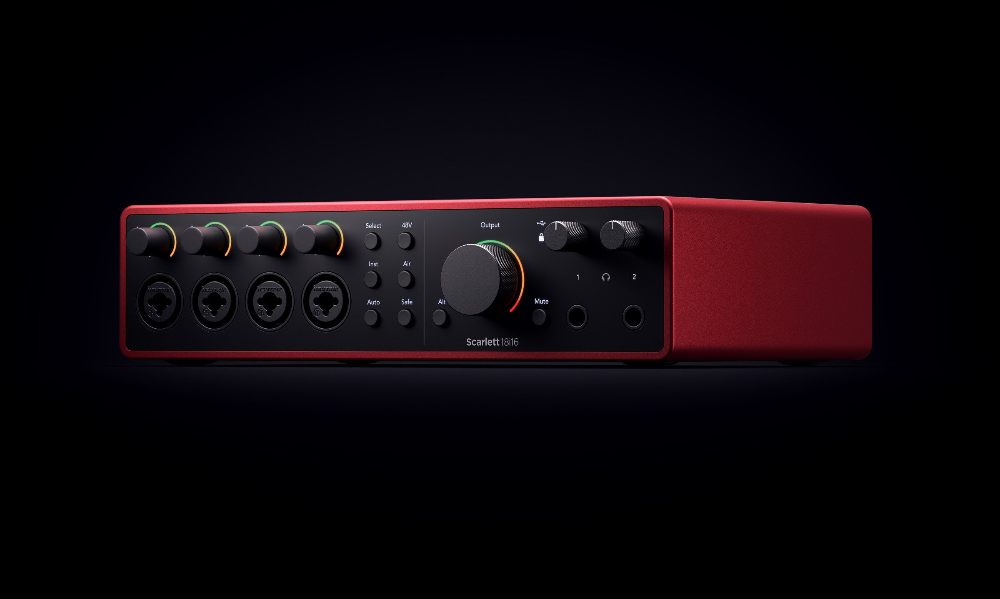
Scarlett 18i16 4th Gen
User Guide
The producer's 18-in, 16-out interface
Scarlett 18i16 Overview
Welcome to the user guide for your Scarlett 18i16.
Introduction
Welcome to the Scarlett 18i16 4th generation.
We've designed the Scarlett 18i16 for the producer who never stops creating. Get studio-quality sound wherever you are with the latest generation of Scarlett:
- Make the most of any mic or guitar with +69dB of gain on each input.
- Set your levels in seconds, and never lose a great take again with Auto Gain and Clip Safe.
- Re-engineered Air mode with Presence and Harmonic Drive.
- Remotely control your preamps using our Focusrite Control 2 software.
- Record straight out of the box with Easy Start and a complete suite of studio software included.
- Easily expand your setup with up to eight channels of ADAT.
- Create two completely independent headphone mixes from Focusrite Control 2.
This is Version 3.0 of the Scarlett 18i16 user guide.
What's in the Box?
The box for your Scarlett 18i16 includes:
- Scarlett 18i16
- USB-C to C cable
- Power adapter (USB-C, 5V, 3A, 15W)
- Getting Started Information (printed inside the box lid)
- Important Safety Information sheet
System Requirements
The easiest way to check your computer's operating system (OS) is compatible with your Scarlett 18i16 is to use our Help Centre's compatibility articles:
Focusrite Help Centre: Compatibility
As new OS versions become available, you can check for further compatibility information by searching our Help Centre at:
Software System Requirements
To check we support Focusrite Control 2 on your operating system (OS) please use our Help Centre's compatibility articles:
Focusrite Help Centre: Compatibility
As new Focusrite Control 2 or OS versions become available, you can check compatibility information by searching our Help Centre at:
Getting Started with your Scarlett 18i16
Powering on your Scarlett
To power on your Scarlett 18i16 using mains power:
- Connect the power supply to your Scarlett 18i16's power socket.
- Connect the USB cable from your Scarlett 18i16 to your computer.
Your Scarlett is now powered on and ready to use.
Always turn on your speakers last.
Your Scarlett's speaker outputs have anti-thump technology; this reduces the chances of hearing pops through your speakers when you turn on your interface. However, it is best practice to turn your speakers on after you have turned on everything else in your recording set up.
If you don't turn on your speakers last, loud pops may damage your speakers, or worse, your hearing.
Easy Start
Easy Start gives you a step-by-step guide to setting up your Scarlett and creates personalised tutorials based on how you plan to use your Scarlett. This online tool also guides you through your Scarlett's registration process and accessing the software bundle.
On both Windows and Mac computers, when you connect your Scarlett to your computer, it first appears as a Mass Storage Device, like a USB drive. Open the drive and double click 'Click Here To Get Started.url'. Click 'Get Started' to open Easy Start in your web browser.
After you've opened Easy Start, follow the step-by-step guide, to install and use your Scarlett.
Windows
After you connect your Scarlett 18i16 to your computer, a device appears in File Explorer called Scarlett 18i16 4th Gen, this allows you to access Easy Start.
To access Easy Start:
- Open File Explorer.
- Click on Scarlett 18i16 4th Gen (D:). The letter may be different.
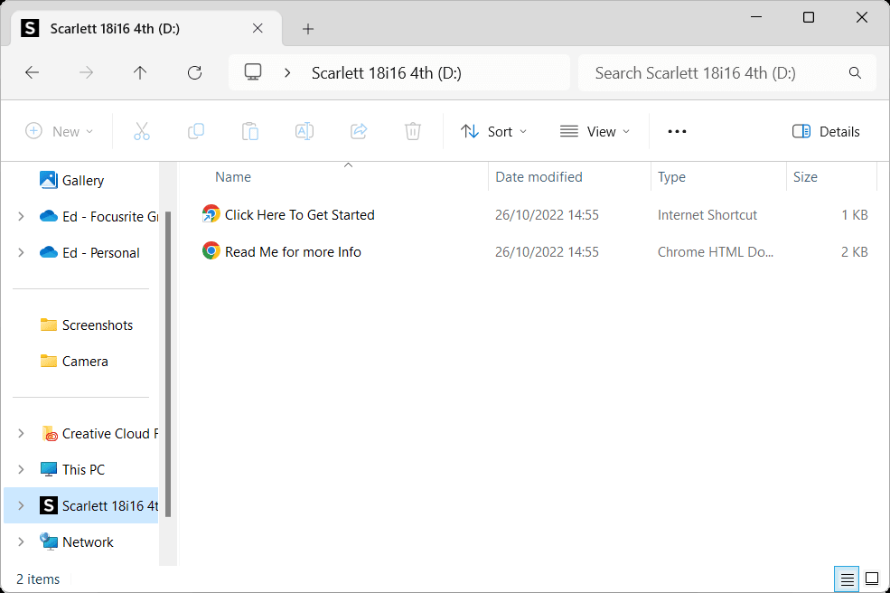
- Double-click Click Here to Get Started. This redirects you to the Focusrite website, where we recommend you register your device:
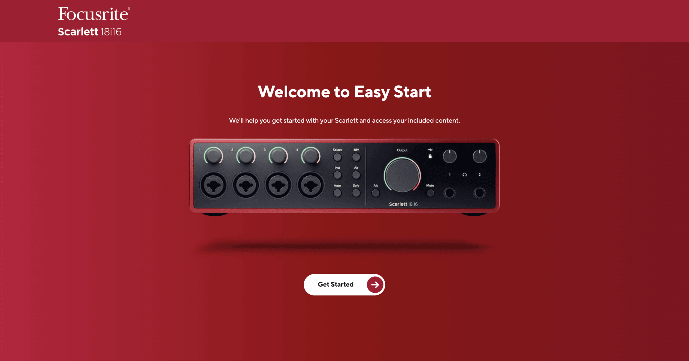
- Click Get Started, and we'll take you through a step-by-step setup guide based on how you want to use your Scarlett.
During Easy Start, you'll install Focusrite Control 2. After you install and open Focusrite Control 2, click 'Update Scarlett 18i16'. Do not disconnect your Scarlett while Focusrite Control 2 updates it. After the Focusrite Control 2 update is complete, the Scarlett no longer appears as a Mass Storage Device on your computer.
Your operating system should change the computer's default audio inputs and outputs to the Scarlett.
To verify this, right-click the speaker icon on the Windows taskbar, and make sure Scarlett is your Sound output.
Mac
After you connect your Scarlett 18i16 to your computer, a Scarlett icon appears on the desktop or, if you use Chrome, you'll see a pop-up:
To access Easy Start:
- Double-click on the icon to open the Finder window shown below:
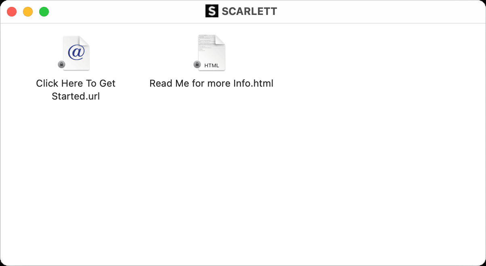
- Double-click Click Here to Get Started. This redirects you to the Focusrite website, where we recommend you register your device:
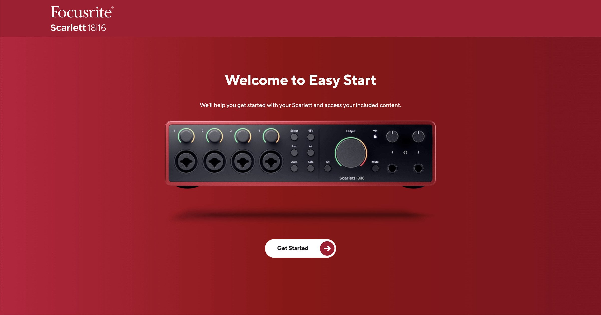
- Click Get Started, and we'll take you through a step-by-step setup guide based on how you want to use your Scarlett.
During Easy Start, you'll install Focusrite Control 2. After you install and open Focusrite Control 2, click 'Update Scarlett 18i16'. Do not disconnect your Scarlett while Focusrite Control 2 updates it. After the Focusrite Control 2 update is complete, the Scarlett no longer appears as a Mass Storage Device on your computer.
Your operating system should change the computer's default audio inputs and outputs to the Scarlett.
To verify this, go to System Settings > Sound, and ensure the input and output are set to Scarlett 18i16.
All Users
The second file - 'More Info and FAQs' - is also available during the setup process. This file has some more information about Easy Start, which you may find helpful if you have any issues with the setup.
Once registered, you have immediate access to the following resources:
- Focusrite Control 2 (Mac and Windows versions available) - see note below.
- Multi-language User Guides - also always available from downloads.focusrite.com.
- Licence codes and links for the optional bundled software in your Focusrite account. To find out what bundled software is included with Scarlett 18i16, please visit our website: focusrite.com/scarlett.
What is Focusrite Control 2?
Focusrite Control 2 is the software application you use to control your Scarlett interface.
We occasionally update your Scarlett 18i16's firmware with new features and improvements, to make sure you are getting the most from your Scarlett. Focusrite Control 2 updates your Scarlett 18i16's firmware.
Focusrite Control 2 allows you to control various features of your Scarlett from your computer.
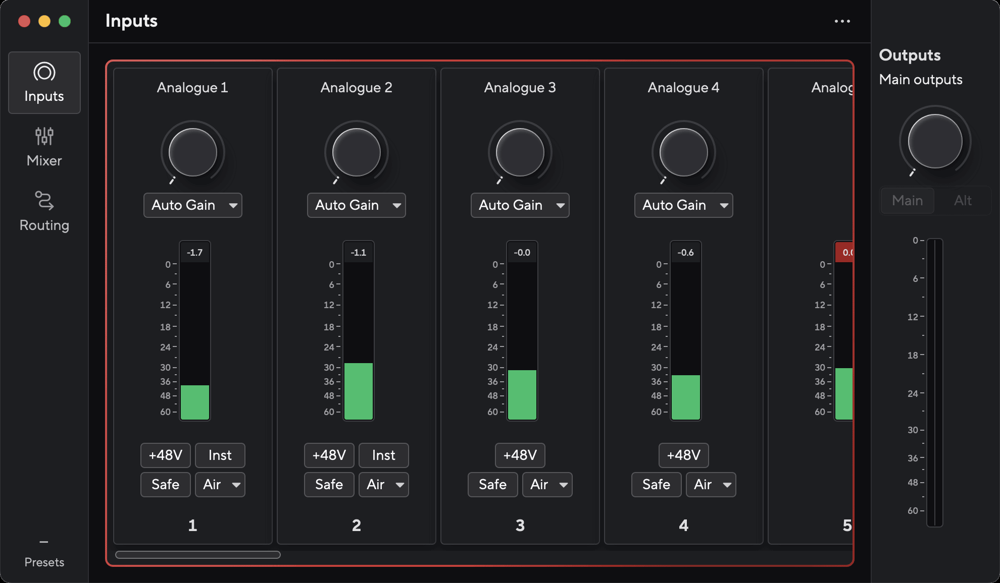
Focusrite Control 2 is compatible with most major screen reader software, allowing you to control the features on your Scarlett with your computer's keyboard.
Installing Focusrite Control 2
You can install Focusrite Control 2 on Windows and Mac. To download and install Focusrite Control 2:
- Go to the Focusrite downloads website: focusrite.com/downloads
- Find your Scarlett on the Downloads website.
- Download Focusrite Control 2 for your operating system (Windows or Mac).
- Open the Downloads folder on your computer and double-click the Focusrite Control 2 installer.
- Follow the on-screen instructions to install Focusrite Control 2.
- If it's not already, connect your Scarlett interface to your computer with the USB cable.
- Open Focusrite Control 2 and it detects your Scarlett automatically.
On Windows, installing Focusrite Control 2 also installs the driver. You can download Focusrite Control 2 at any time, even without registering from downloads.focusrite.com. On macOS, you don't need a driver, you only need to install Focusrite Control 2.
Manual Registration
If you decide to register your Scarlett at a later date, you can at: customer.focusrite.com/register
You need to enter the Serial Number manually: you can find this number on the interface's base (the white number below) or the barcode label on the giftbox.
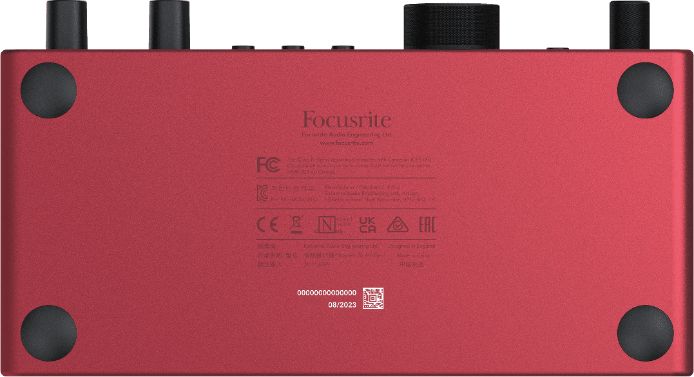
Make sure you download and install Focusrite Control 2. Opening Focusrite Control 2 disables Easy Start, updates your Scarlett 18i16's firmware, and unlocks your Scarlett 18i16's full feature set.
In Easy Start mode, the interface functions at up to 48 kHz sample rate; once you install Focusrite Control 2, you can work at sample rates up to 192 kHz.
If you don't install Focusrite Control 2 immediately, you can download it at any time from: downloads.focusrite.com
Manually disabling Easy Start
After you've been through Easy Start, installed and opened Focusrite Control 2, your Scarlett is no longer in Easy Start mode.
If your Scarlett 18i16 is still in Easy Start mode, or you have chosen not to install Focusrite Control 2 to disable Easy Start Mode:
- Turn off your Scarlett 18i16.
- Press and hold the 48V button.
- Keeping the 48V button held, power on your Scarlett 18i16.
- Wait for the front panel to light up, then release the 48V button.
- Restart (power off and power on) your Scarlett 18i16.
Your Scarlett powers on with Easy Start disabled.
Scarlett 18i16 Hardware Features
Front Panel
- Inputs 1–4 Gain Controls and Gain Halos - The Gain control sets the input level and the Gain Halo shows you the input and preamp gain levels for either the jack or XLR Mic input.
- Inputs 1–4 Neutrik® Combo XLR and 6.35mm (1/4") jack connectors. Accepts XLR mic-level inputs, or unbalanced mono (TS) and balanced Mono (TRS) 1/4" jack cables at line level. Inputs 1 and 2 can also accept instrument-level.
- Select button - Press to move the selection to the next preamp. The other buttons change to control the input you select. The currently selected channel's number lights green.
- 48V button - Press to turn on 48V phantom power at the XLR mic input to power condenser microphones. You can set 48V independently per preamp channel.
- Air button - Press to turn on AIR mode (see AIR).
- Inst button - Press to toggle the selected 6.35mm (1/4") input between Line or Instrument level.
- Auto button - Press to start the Auto Gain feature (see Auto Gain).
- Safe button - Press to turn on the Clip Safe feature for your input (see Safe).
- Alt button - press the Alt button to route the signal going to the first monitor output pair (1 and 2) and the second monitor output pair (3 and 4). To use two pairs of monitors and switch between them, see Alt.
- Main Speaker Output Control and Output Level meter - Controls the level going to Outputs 1 and 2. The meter shows you the level being sent out.
- Status icons
- USB LED - Lights green when your computer recognises your Scarlett, and white if it is disconnected from your computer (in standalone mode).
- Sync Status - Lights green when your Scarlett 18i16 is synchronised with itself or an external digital device. It lights white when it can't lock. For more information, see the Sync Status section.
- Mute button - silences the signal being sent to your outputs.
- Headphone level control and output sockets - Connect up to two sets of headphones to the output sockets and control the output with the corresponding level control.
Back Panel
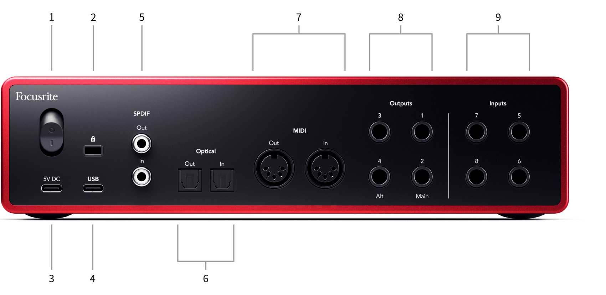
- Power switch - O is the off position, I is the on position.
- Kensington Lock - use a lock to secure your Scarlett and deter theft.
- 5V DC - a USB-C connector to supply power to your Scarlett 18i16. Use the included USB-C power supply.
- USB - USB-C connector to connect your Scarlett to your computer. You can also bus-power your Scarlett 18i16 if your computer's USB port can supply 3 Amps.
- S/PDIF Out and In - two coaxial RCA sockets for two-channel S/PDIF digital audio signals in and out. See Sync Status and using your Scarlett with ADAT and S/PDIF for information on how to set up your Scarlett 18i16 with a S/PDIF device.
- Optical Out and In - two TOSLINK™ connectors for eight channels of digital audio in ADAT format at 44.1/48 kHz and four channels at 88.2/96kHz. See Sync Status and using your Scarlett with ADAT and S/PDIF for information on how to set up your Scarlett 18i16 with an ADAT device.
- MIDI Out and In - standard 5-pin DIN sockets for external MIDI equipment. The Scarlett 18i16 acts as a MIDI interface, allowing MIDI data to/from your computer.
- Line Outputs 1–4 - Neutrik® 1/4" jack (TS or TRS) sockets to connect your Scarlett to line-level inputs on devices such as monitor speakers, amplifiers, mixers or external processors. Use 1/4" TRS jack cables for balanced connections where possible.
- Line Inputs 5–8 - Neutrik® 6.35mm (1/4”) jack sockets. Accepts both unbalanced mono (TS) and balanced Mono (TRS) 1/4" jack cables at line-level.
Your Scarlett 18i16's front panel in depth
This section covers all the features on your Scarlett 18i16's front panel, what they do, how you might use them, and how they work in Focusrite Control 2.
Microphone Inputs
You can control your microphone level using the corresponding input gain control on the front panel. 48V phantom power is also available if you are using a condenser mic, you can enable phantom power using the front panel 48V button.
Setting your Scarlett 18i16's preamp input gain
The preamp input gain controls how much signal you are sending into your computer and recording software.
It's essential to set a good level for the preamp input gain so you get the best quality recording. If the preamp input gain is too low, your signal will be too quiet and when you try to boost its level later you may hear noise in the recording; if the preamp input gain is too high you might 'clip' the input and hear harsh distortion in your recording.
To increase the input gain, turn the gain control clockwise. As you move the gain control, the Gain Halo gradually lights clockwise to show you the gain level. This diagram shows the gain at various levels:
- No input gain
- 25% input gain
- 50% input gain
- 75% input gain
- 100% input gain
When you adjust your input gain while you send a signal into your preamp, the ring lights the same way as above but a colour, green, amber or red, shows how much level is going into your computer. Shortly after you stop adjusting the gain the meters revert to input meters (see Input Metering).
- Gain at 40%, signal good.
- Gain at 40%, signal pre-clip.
- Gain at 40%, signal clipping.
Green shows your signal level is good. Amber shows your signal is pre-clip, any higher and you are likely to clip the input. Red shows your signal has clipped, you should reduce the gain.
Software Gain Control – you can also control the preamp gain remotely using Focusrite Control 2.
To adjust the preamp gain in Focusrite Control 2:
- Click the virtual knob for the channel you'd like to adjust or use the tab key to select the preamp gain control.
- Move your mouse up and down or use the arrow keys to increase or decrease the gain (in ±1dB increments).
The following images show the preamp gain at minimum, medium and maximum gain.
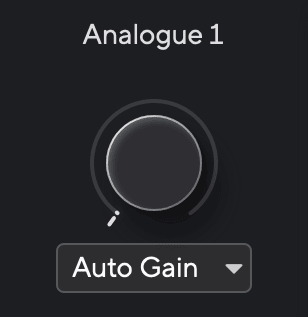
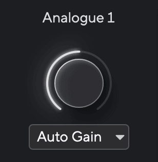
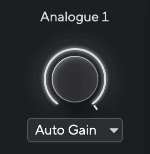
Input Metering – when you're not moving the input gain control the input metering uses the entire Gain Halo. As the incoming signal gets louder (for example with a higher input gain setting) the Gain Halo lights from green through to amber before the entire Gain Halo flashes red to show you the input has clipped.
This diagram shows the meters at different levels to show the input signal level:
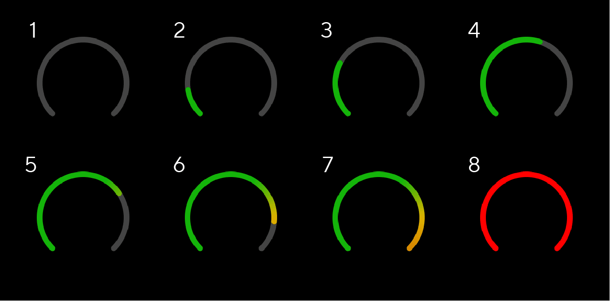
- No input signal
- -42 dBFS
- -36 dBFS
- -24 dBFS
- -18 dBFS
- -12 dBFS
- -6 dBFS
- 0 dBFS, clipping - turn down the input gain to avoid distortion and clipping.
If your signal clips the clip indicator at the top of the meter lights red. If this happens, select that channel and reduce the gain.
Software Metering – in the same way as the input meters on your Scarlett 18i16's front panel, you can see the incoming signal on the meters in Focusrite Control 2 to set the correct preamp gain.
As the signal gets louder, the meter in Focusrite Control 2 lights from green to amber (pre-clip).
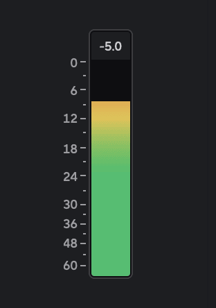
The indicator above the meter shows you the peak level (in -dBFS), the highest level on this track since you started monitoring the input. When you hover over the Peak level meter, you can click to Reset the value.
When you're recording, it's a good idea to aim for a -12dBFS peak level. This ensures you have enough headroom when you've recorded all your tracks.
When you overload the preamp, with too much input signal, or by adding too much gain, the Peak Level Meter lights red. Hover over the Peak Level Meter and click to Reset the value.
Select Button
Many front panel controls on your Scarlett 18i16 are shared across the preamp inputs. The Select button moves the preamp controls to different inputs.
At least one preamp is always selected, to change which preamp(s) the controls are affecting, press the Select button. When you do this, the newly selected preamp's number lights green and the preamp setting lights change to match the new preamp.
When you turn on your Scarlett 18i16 the last selected preamp before you turned it off remains the selected preamp.
Linking Preamps
Linking preamps allows you to control two preamps simultaneously using one set of preamp controls. You can match gain controls for two preamps and enable other preamp controls. This is useful for stereo recording, for example, a microphone pair, stereo synthesiser, or keyboard.
To link preamps:
- Press and hold the Select button for one second.
When you've made the Preamp Link:
- Both preamp numbers light green and the Gain Halos light temporarily to their preamp level.
- The preamp gain level is set to the lowest value of the newly linked pair.
- The preamp settings are inherited from the currently selected preamp, e.g. preamp 1 is selected, therefore Preamp 2 inherits, Air, Safe and Inst settings from Preamp 1.
- Changing any preamp setting changes the state for both preamps.
- Adjusting either gain control changes the gain level for both preamps and is shown on both Gain Halos.
- 48V disables for both preamps.
Unlinking Preamps – to unlink preamps, hold the Select button for one second. When you unlink a pair:
- The first preamp of the previously linked pair becomes selected and lights green.
- Gain levels and preamp settings stay the same, but you can now change them independently.
Linking Preamps in Focusrite Control 2 – to link preamps from Focusrite Control 2, click the link icon at the top of the channel strip.
When you link two preamps, the link icon turns green, one set of preamp controls disappears, and the meters for each channel merge to form a stereo meter.
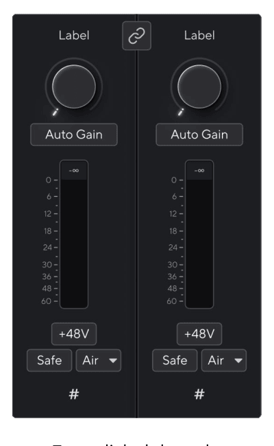
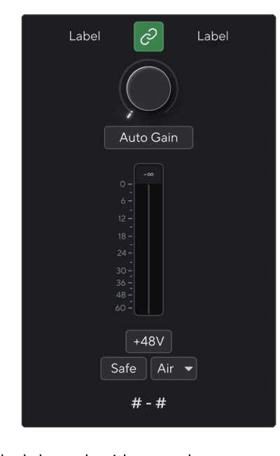
Unlinking Preamps in Focusrite Control 2 – to unlink preamps from Focusrite Control 2 and control them independently again, click the green link icon at the top of the channel strip.
When you unlink two preamps, the link icon returns to black/white, two sets of preamp controls appear, and the meters split again for each separate channel.
When you unlink preamps:
- The first preamp of the previously linked pair becomes selected and lights green.
- Gain levels and preamp settings stay the same, but you can now change them independently.
48V button (Phantom Power)
48V, also commonly referred to as 'Phantom Power', sends 48 Volts from your interface's XLR connector to devices needing power to work. The most common use is sending power to condenser microphones, but you may also need 48V for inline mic preamps, active dynamic microphones and active DI boxes.
To turn on 48V:
- Connect your microphone, or another powered device, to an XLR input on your interface using an XLR cable. 48V is not sent to the 6.35mm (1/4") jack inputs.
- Select the correct input channel.
- Press the 48V button (or the corresponding software button).
The 48V icon lights green to show it is enabled.
48V phantom power is now being sent to the selected XLR input and to any devices connected to the XLR input.
If you accidentally send 48V phantom power to the wrong input, most modern microphones of other types, e.g., dynamic or ribbon, will not be damaged, but some older microphones may be. If you're unsure, please check your microphone's user guide to ensure it is safe to use with 48V phantom power.
48V (Phantom Power) Software Control – to enable 48V (Phantom Power) from Focusrite Control 2 click the +48V button for the input you want to enable it on. This is the same as pressing the 48V button on the Scarlett 18i16 hardware.
The XLR and 6.35mm (1/4") jack inputs 1 and 2 on the front panel of your Scarlett 18i16 take priority over the corresponding mic/line inputs on the back panel.
If you have no signal from something connected to rear inputs 1 and 2, check if you have something connected to front inputs 1 and 2.
If you activate 48V for inputs 1 or 2 then plug a 6.35mm (1/4”) jack into the line-level or instrument input on the front panel, your Scarlett 18i16 automatically disables 48V for the corresponding rear microphone input.
Inst (Instrument) Button and Line Level Inputs
Inst, or instrument, changes the impedance and input level of the 6.35mm (1/4") jack inputs on your Scarlett so the inputs sound their best for either an instrument or line-level source. We list the input impedance values in the Specifications section. If you don't turn on Inst and connect an electric guitar, the resulting sound can be muddy and quiet compared to with Inst on.
The Inst (Instrument) button only affects the 6.35mm (1/4") line input for the selected channel, either input 1 or input 2. It changes it from an input suitable for line-level devices to an input better suited for instrument-level devices.
To enable, or disable, instrument mode for the 6.35mm (1/4") jack input, select the channel and press the Inst button once. Green shows Inst is enabled, and white shows Inst is disabled. When you enable Inst and connect a jack to your Scarlett, the minimum gain for the input is changed to +7dB.
When the Inst light is white, the 6.35mm jack input is at line level.
When Inst is enabled (green) you can connect instrument-level devices to the 1/4" inputs such as, but not limited to:
- Electric or electro-acoustic guitars directly and via effects pedals.
- Electric basses
- Acoustic instruments with pick-ups such as violins, double basses etc.
When Inst is disabled (white) you can connect line-level devices to the 6.35mm (1/4") inputs such as, but not limited to:
- Synthesisers
- Keyboards
- Drum Machines
- External Microphone Preamps
When you switch between Inst and Line, the gain stays at the last level you set.
Instrument/Line Software Control – to change inputs 1 or 2 between instrument and line from Focusrite Control 2 click the Inst button once.
Air Modes
Air lets you change your Scarlett's preamp sound with two different modes; Air Presence or Air Presence and Harmonic Drive.
To enable Air, select your input, press the Air button once for Air Presence, again for Air Presence and Harmonic Drive and again to turn off. The Air LED changes colour to show which mode you have selected:
| Mode | Description | AIR LED | Notes |
|---|---|---|---|
| Off | The preamp is clean | White | |
| Air Presence | An analogue circuit gives a presence boost to your sources. | Green | |
| Air Presence and Harmonic Drive | Adds harmonics, in addition to the analogue Air circuit. | Amber | Only available at up to 96kHz |
Air Software Control – to enable AIR from Focusrite Control 2 click the Air button. This is the same as pressing the Air button on the Scarlett 18i16 hardware.
When you click Focusrite Control 2's Air button, the last selected Air mode becomes activated. To change the selected Air mode (Presence or Presence and Drive) click the arrow to show the dropdown menu.
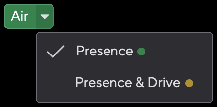
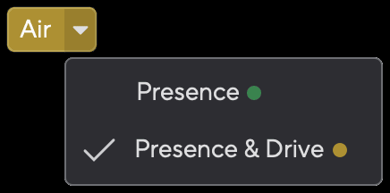
Air Presence & Drive is only available at up to 96kHz, you cannot use it at quad-band (176.4kHz and 192 kHz) sample rates.
Auto Gain
Auto Gain allows you to send a signal into your Scarlett 18i16 (for example singing or playing your instrument) for 10 seconds and let the Scarlett set a good level for your preamps. If you find the levels aren't right, you can adjust the gain controls manually to fine-tune the levels before recording.
To use Auto Gain:
- Press the Select button to move your preamp controls to the correct preamp.
- Press the white Auto button on your Scarlett, or the corresponding software button. The Auto icon lights green for ten seconds.
- Speak or sing into the microphone, or play your instrument during the Auto Gain countdown. Perform as you would while you're recording to make sure Auto Gain sets a good level.
If the Auto Gain was successful, the Gain Halo lights green before the gain value is shown on the Gain Halo for a second. The gain is now set at a good level for your recording.
If Auto Gain fails, the Gain Halo lights red. Please see the section, The Gain Halo turned Red, for more information.
Scarlett's Auto Gain makes sure your levels are set right not only using the input signal but also factors in:
- The preamp's noise floor.
- Digital silence.
- Inter-channel crosstalk.
- Unwanted knocks or bumps on your microphones.
Auto Gain Software Control – to use Auto Gain in Focusrite Control 2:
- Click the Auto Gain button in Focusrite Control 2.
- Speak or sing into the microphone, or play your instrument during the Auto Gain countdown. Perform as you would while you're recording to make sure Auto Gain sets a good level. The Auto Gain process starts and the software Gain halo turns into a countdown timer.
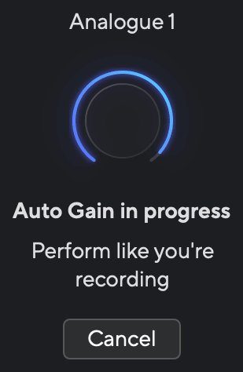
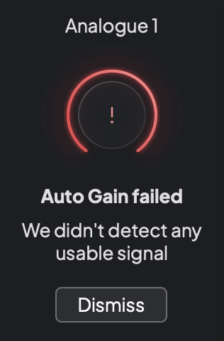
Before running Auto Gain again, make sure your input has something connected to it correctly, if you're using a condenser microphone, 48V is on, and you are making sound while Auto Gain runs.
To cancel Auto Gain, press the Auto Gain button again at any time during the process. The gain returns to the value you set before starting Auto Gain.
If the Auto Gain was successful, the Gain Halo lights green before the gain value is shown on the Gain Halo for a second. The gain is now set at a good level for your recording.
If the input signal is unsuitable for Auto Gain (for example there's no signal detected), after ten seconds, Auto Gain stops and the Gain Halo lights red for a second. The gain returns to the value you set before starting Auto Gain.
Multichannel Auto Gain
Auto Gain allows you to send a signal into your Scarlett 18i16 (for example singing or playing your instrument) for 10 seconds and let the Scarlett set a good level for your preamps. If you find the levels aren't right, you can adjust the gain controls manually to fine-tune the levels before recording.
Multichannel Auto Gain starts the Auto Gain process for all the preamp channels on your interface. This is particularly useful for quickly setting levels for situations where you are using multiple channels simultaneously, for example:
- Setting levels for yourself if you're playing guitar and singing simultaneously.
- Setting levels for a drummer when you have multiple microphones on the drum kit.
- Setting levels for a band recording 'live' together.
To start the multichannel Auto Gain process:
- Hold the Auto button for two seconds. The Auto icon fades between off and Green for ten seconds, and the Gain Halos for all channels turn into ten-second countdown timers.
- Speak or sing into the microphone, or play your instrument during the Auto Gain countdown. Perform as you would while you're recording to make sure Auto Gain sets a good level.
If the Auto Gain was successful, the Gain Halos light green before the gain value is shown on the Gain Halos for a second. The gain is now set at a good level for your recording.
To cancel Auto Gain, press the Auto Gain button again at any time during the process. The gain returns to the value you set before starting Auto Gain.
Multichannel Auto Gain in Focusrite Control 2 – you can also run multichannel Auto Gain from within Focusrite Control 2. To do this:
- Open Focusrite Control 2 and go to the Inputs tab.
- Click the dropdown arrow to the right of the usual Auto Gain button.
- Choose Auto Gain All – this starts running Auto Gain for all the channels on your Scarlett 18i16.
Once Auto Gain has finished, Focusrite Control 2 shows the channels that have been set and their new gain levels.
Multichannel Auto Gain failed – multichannel Auto Gain might fail during the process for one, multiple, or all channels. You can either:
- Click Retry and all Auto Gain runs again for all the channels you ran Auto Gain for, even the successful channels.
- Click close and run Auto Gain for any failed channels.
- Click close and manually adjust the gain for any failed channels.
Clip Safe Button
The Safe button applies Clip Safe, which automatically adjusts your preamp gain if you're at risk of clipping.
Clipping happens when your gain is set too high for the sound being recorded and your input overloads the preamp. A clipping symptom is preamp distortion, which is often unpleasant and can ruin a recording. Clip Safe helps you avoid this so if your input gets near to clipping, Clip Safe reduces the preamp gain, so you won't have to re-record your take.
Clip Safe is only available at up to 96kHz, you cannot use it at quad-band (176.4kHz and 192 kHz) sample rates. The Safe LED lights red to show when it's unavailable.
To enable Clip Safe:
- Press the Select button to move your preamp controls to the correct preamp.
- Press the Safe button on the interface or the corresponding software button.
When you enable Safe, the Safe icon lights green.
When you have two inputs selected using Preamp Link, Safe is applied to both preamps.
When you enable Clip Safe, your Scarlett continuously monitors your input signals, up to 96,000 times a second, and through a combination of analogue preamp adjustment and DSP, Clip Safe significantly reduces the risk of clipping.
Clip Safe Focusrite Control 2 – to enable Clip Safe from Focusrite Control 2, click the Safe button:
Output Control and Level Meter
The Output control and Output level meter are related to the signals going to Outputs 1 and 2 on the back of your Scarlett 18i16, the outputs you'd most often connect to monitor speakers.
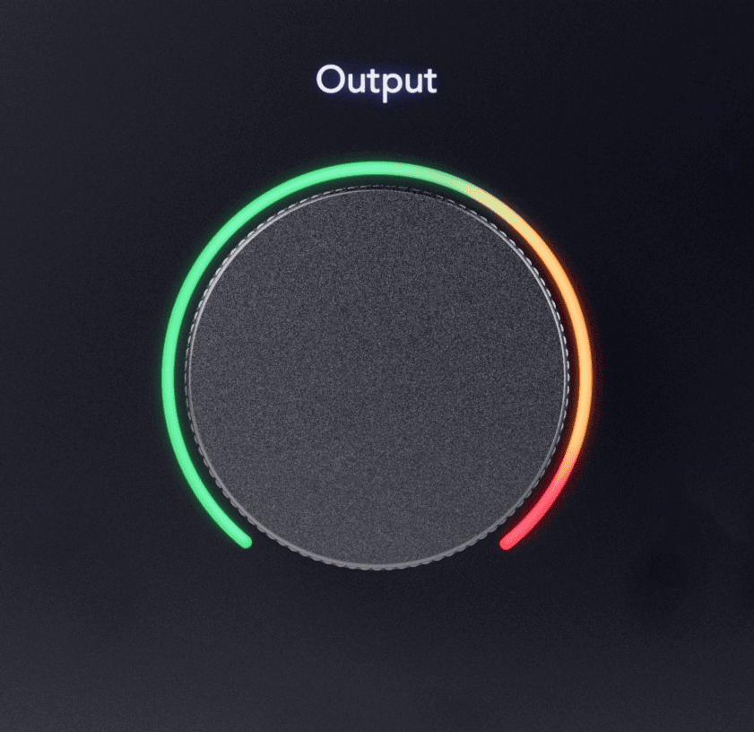
The Output control sets the level at the outputs from nothing (fully anti-clockwise) to full-scale output (fully clockwise).
The Output Level meter around the Output level control is a pre-fade meter (it is not affected by the control's position) showing you the signal level coming from your computer.
Mute Button
The Mute button silences the signal being sent to your outputs. When active, Mute lights green.
By default, Mute affects the Main monitor outputs 1 and 2, but in Focusrite Control 2 you can change this to control your Alt outputs.
Mute Software Control – to enable/disable Mute in Focusrite Control 2 click the Mute button in the Outputs section on the right.
The Mute button works in the same way as the Mute button on the front panel of your Scarlett 18i16. When active, Mute lights green.
Sync Status and using your Scarlett with ADAT and S/PDIF
The Sync Status icon on the front panel lights green when your Scarlett 18i16 is 'locked' to or 'synchronised' with a clock source.
The Sync Status indicator is most useful when you're trying to expand the channel count using your Scarlett 18i16 with other equipment connected to your Scarlett 18i16's digital inputs or outputs; the ADAT or S/PDIF IO.
To pass audio, the Sync Status indicator must light green. You can do this by making your Scarlett 18i16 clock leader (Internal clock) or clock follower (ADAT or S/PDIF clock) with a valid clock leader connected.
When you're using the digital inputs your Scarlett 18i16 and the other audio devices need to have their internal clocks synchronised, using clock signals, so their audio is recorded in time.
Depending on what type of digital device you're connecting to your Scarlett 18i16 (ADAT, coaxial S/PDIF, or optical S/PDIF) you need to make sure the digital IO mode is set correctly in Focusrite Control 2.
If your digital audio devices aren't synchronised correctly, you'll hear audible glitches, or the audio won't pass at all.
There are a few principles when you're trying to synchronise multiple digital audio devices:
- The clock signal can be embedded into the audio signal, down the same cables (e.g. S/PDIF, or ADAT).
- Clock signals are always one-way, you can't send and receive clock signals using one ADAT or S/PDIF cable.
- There are Clock Leaders and Clock Followers. Devices 'follow' other devices' clock signals. One device in your setup must be the clock leader, the other devices must be followers and receive the clock signal from the clock leader.
- Every device with digital I/O will have an internal clock and should have the option to be a clock leader or a clock follower.
Setup 1 – Scarlett 18i16 as a Clock Follower
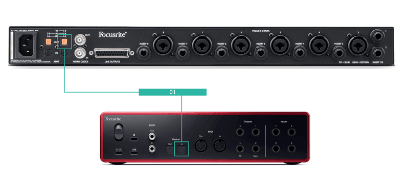
This is the most basic setup and involves one expansion device, increasing the channel count of your Scarlett 18i16.
We've outlined the steps for an ADAT expansion device, but the same theory applies for S/PDIF expansion devices. Depending on which S/PDIF type you are using (coaxial or optical) you may need to change your Digital IO Mode settings in Focusrite Control 2.
Equipment:
- An external ADAT preamp - such as a Clarett+ OctoPre.
- One TOSLINK cable (also referred to as an ADAT cable).
Setup:
- Connect the TOSLINK cable from the ADAT preamp's ADAT Out port to the ADAT In port on the Scarlett 18i16.
- Set the ADAT preamp clock to Internal and your chosen sample rate.
- In Focusrite Control 2, set the Scarlett 18i16 clock to ADAT and match the sample rate to the ADAT preamp.
- In your DAW, set your channels to inputs 13 - 20, these are the eight ADAT inputs.
Setup 2 – Scarlett 18i16 as a Clock Leader
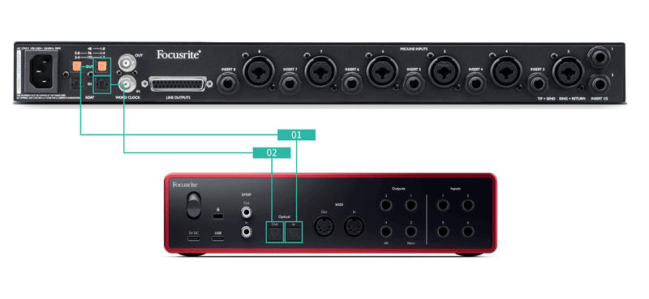
This is similar to Setup 1; however, it involves more cables. It's useful if you only use your expansion device occasionally, so you'd prefer to keep your Scarlett 18i16 as your clock leader.
We've outlined the steps for an ADAT expansion device, but the same theory applies for S/PDIF expansion devices. Depending on which S/PDIF type you are using (coaxial or optical) you may need to change your Digital IO Mode settings in Focusrite Control 2.
Equipment:
- An external ADAT preamp - such as a Clarett+ OctoPre.
- Two TOSLINK cables (also referred to as an ADAT cable).
Setup:
- Connect the TOSLINK cable from the ADAT preamp's ADAT Out port to the ADAT In port on the Scarlett 18i16.
- Connect a second TOSLINK cable from the Scarlett 18i16's ADAT Out to the ADAT preamp's ADAT In. This cable is just to send clock data, but if your ADAT preamp has outputs, you can also send signals back out of your computer to gain extra analogue outputs.
- Set the ADAT preamp clock to ADAT and your chosen sample rate.
- In Focusrite Control 2, set the Scarlett 18i16 clock to Internal and match the sample rate to the ADAT preamp.
- In your DAW, set your channels to inputs 13 - 20, these are the eight ADAT inputs.
Setup 3 – Using more than one expansion device
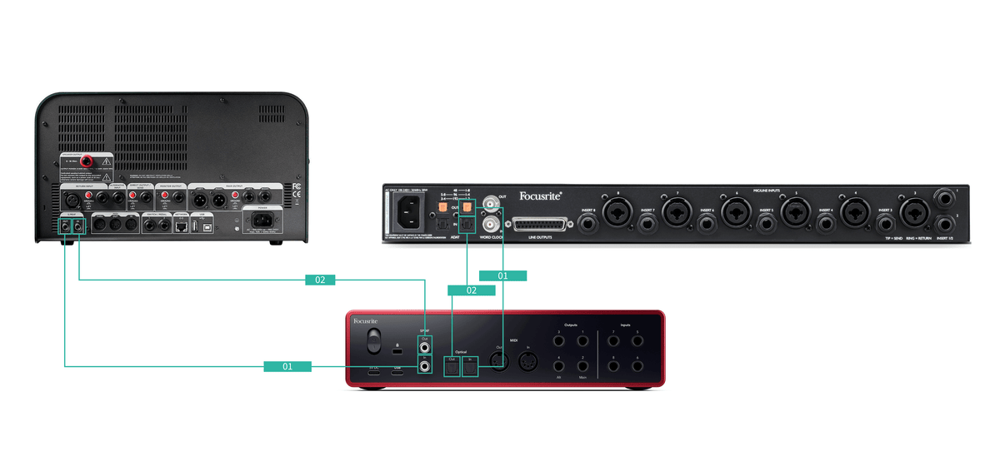
In this setup, we're using two expansion devices: an ADAT device and an S/PDIF device. For ADAT, you might use a preamp like an OctoPre or a mic preamp. For S/PDIF, you could connect another interface in standalone mode or a guitar amp modeller.
Using the Scarlett 18i16 as your clock leader is useful if you only use your expansion devices occasionally, so don't need to turn them on every time you use your Scarlett 18i16.
Equipment:
- An external ADAT preamp - such as a Clarett+ OctoPre.
- A S/PDIF device - such as a guitar amp.
- Two ADAT cables.
- Two S/PDIF cables.
Setup:
- Connect the TOSLINK cable from the ADAT preamp's ADAT Out port to the ADAT In port on the Scarlett 18i16. Connect the S/PDIF cable from the S/PDIF device's S/PDIF Out to the S/PDIF In on the Scarlett 18i16.
- Connect a second TOSLINK cable from the Scarlett 18i16's ADAT Out to the ADAT preamp's ADAT In. Connect a second S/PDIF cable from the Scarlett 18i16's S/PDIF Out to the S/PDIF device's S/PDIF In.
- Set the S/PDIF preamp clock to S/PDIF and your chosen sample rate. Some S/PDIF devices don't allow you to change these settings.
- Set the Scarlett 18i16's clock to internal and match the sample rate.
- Set the ADAT preamp to clock to ADAT and match the sample rate (it's getting its clock from the Scarlett 18i16 via the second ADAT cable).
At dual-band sample rates (88.2kHz and 96kHz) it's only possible to get the following configurations using two devices:
- Two coaxial S/PDIF channels and four ADAT channels
- Two optical S/PDIF channels and four ADAT channels
- Eight ADAT channels
At all sample rates, it is not possible to use coaxial S/PDIF and both ADAT ports simultaneously. See the Scarlett 18i16 input channel order for more information on the possible input combinations.
In these examples, we've used Focusrite products to demonstrate ADAT and S/PDIF digital expansion. But remember, ADAT and S/PDIF are universal standards. So, any device with digital ADAT or S/PDIF outputs will work with your Scarlett's digital inputs.
Headphone Outputs
Your Scarlett 18i16 has two headphones outputs. Both headphones outputs are completely independent of the other analogue outputs, so they can have their own dedicated mix.
The headphone outputs are 6.35mm (¼”) TRS jacks. Many headphones have a 3.5mm TRS jack, to connect them to your Scarlett 18i16 you must use a TRS 6.35mm to 3.5mm adaptor.
The controls above the headphone outputs control the level going to your headphones.
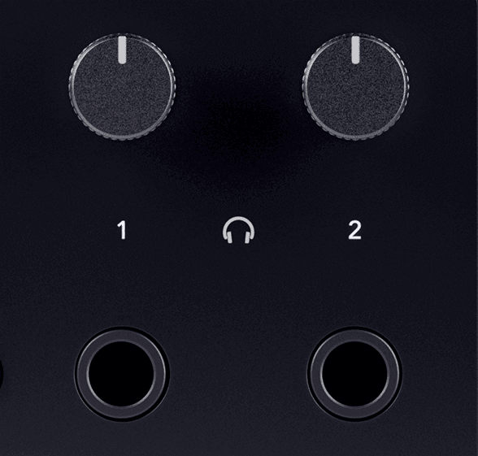
Some headphones and jack adaptors may have TS or TRRS connectors, often due to built-in microphones or volume controls. These might not work properly. If you encounter issues, use headphones and a jack adaptor with TRS connectors.
Headphone Output Routing – you can assign any sources to your headphones, either using a Mix for an independent combination of hardware inputs (direct monitoring) and software playback channels, or directly routing a source, for example Software Playback 1-2.
To set up your headphone routing:
- Open Focusrite Control 2.
- Go to the Routing tab.
- Find your headphones output in the Output list.
- Click the corresponding Source dropdown and choose the source or mix you want to send to your headphones.
The mix you've created is now being sent to the headphones output you selected. You can control the overall level using the headphones control on the Scarlett or in software. You can control different parts of the mix using the Mix in Focusrite Control 2.
Your Scarlett 18i16's back panel in depth
This section covers all the features on your Scarlett 18i16's back panel, what they do, how you might use them and how they work in Focusrite Control 2.
USB Connection
The USB Type-C port labelled USB is to connect your Scarlett to your computer.
Use the included USB-C cable to connect to a USB-C port on your computer, or use the USB-C to A adaptor to connect to a USB-A port on your computer.
If the USB icon flashes red, this means your Scarlett 18i16 isn't getting enough power.
To resolve this issue:
- Disconnect both USB cables. In this order: connect the power supply to the Power USB port then connect the USB cable to the USB port on the Scarlett.
- Make sure you are using the original USB power supply.
- Test a different USB port on your computer, make sure you're connecting directly to your computer and not via a USB hub.
S/PDIF IO
The S/PDIF ports give you two channels of digital I/O to connect to other audio equipment with S/PDIF I/O such as guitar amps, mic preamps or any device with an S/PDIF output.
The S/PDIF ports are coaxial RCA, and we recommend you use 75Ω cables. However, shorter, normal RCA cables should work.
There are many ways to connect and clock your Scarlett 18i16 when you're using an external device connected via S/PDIF. For information on clocking and digital IO setups, please see the Sync Status section.
The Sync Status Indicator on your Scarlett 18i16 should light green. When you send audio from the external device to your Scarlett 18i16 you should see the S/PDIF channels coming in on channels 11-12.
Optical input and output
The two Optical ports (input and output) give you eight channels of digital ADAT I/O, to connect to other audio equipment with ADAT I/O such an eight-channel mic preamps.
There are many ways to connect and clock your Scarlett 18i16 when you're using an external device connected via it's optical ports. For information on clocking and digital IO setups, please see the Sync Status section.
The Sync Status Indicator on your Scarlett 18i16 should light green.
MIDI
The Scarlett 18i16 MIDI In and Out ports allow you to use your Scarlett as a USB MIDI interface. MIDI IN receives MIDI signals from keyboards or controllers; MIDI OUT sends MIDI information to Synths, Drum machines or MIDI-controllable equipment.
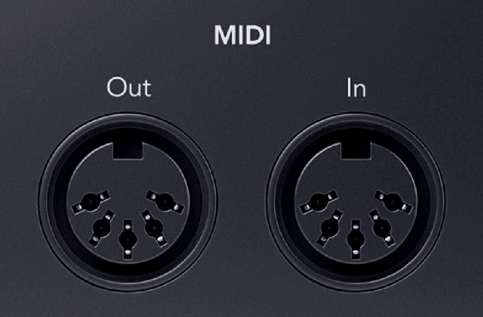
When you first receive your Scarlett 18i16, MIDI is disabled because it is in Easy Start mode. To enable MIDI, install and open Focusrite Control 2.
The MIDI IO doesn't require any setup for you to use your Scarlett 18i16 as a USB MIDI interface. The Scarlett 18i16's MIDI ports appear in your MIDI-enabled software, and you can either send or receive MIDI data between your computer and MIDI hardware via the Scarlett's 5-pin DIN MIDI ports.
The MIDI Out port on your Scarlett 18i16 cannot function as a MIDI Thru port.
Speaker Outputs
Outputs 1 and 2 are line-level outputs to connect your Scarlett 18i16 to an amplifier or active monitors. The outputs are balanced 1/4" TRS jack outputs, you can use them with either unbalanced TS or balanced TRS jack cables and connect to speakers with 1/4" jack, RCA or XLR inputs.
Your Scarlett 18i16's front panel Output dial controls the level sent to Outputs 1 and 2.
It is possible to use unbalanced connections, like TS 6.35mm jacks or jack to RCA cables – but we wouldn't recommend it. Using unbalanced connections, may mean you hear interference through your monitors.
If you hear a static, crackling or any other noise in your monitors, even when sound's not playing, make sure you're using balanced connections where you can.
Line Outputs
Line Outputs 3-4 have identical electrical characteristics to the Monitor line Outputs 1 to 2 but aren't controlled by the Output control.
You can set the signals available at these outputs using Focusrite Control 2, and use the outputs to drive additional speakers in a multichannel monitoring system, such as a subwoofer or to send signals to outboard effects processors.
Setting up your DAW (Recording Software) with your Scarlett 18i16
The Scarlett is compatible with any ASIO-supported DAW on Windows and any Core Audio-supported DAW on macOS. It is also compatible with non-ASIO applications but your channel count may be limited.
To help you get started, we've put together steps to set up your interface and start recording in the most common DAWs. If you need any more information, please see the user guide for your DAW.
If you don't already have a DAW installed on your computer to help get you started, the Scarlett comes with Ableton Live Lite and a version of Pro Tools. You can access these in Easy Start, or from your Focusrite account.
DAW stands for 'Digital Audio Workstation' and is the term given to any software you use to record, arrange or make music.
Logic and GarageBand
To get set up in Logic Pro and GarageBand, follow these steps:
- Open Logic Pro or GarageBand on your computer (you may be prompted to Choose a project, you can choose an Empty Project or use a template).
- Select Audio in the Choose a track type window.
-
Set the Audio Input to Input 1.
If you don't see any inputs, make sure the Device: is set to your Scarlett 18i16.
- Click the arrow to the right of the Device section.
- In the preferences window, set the Output Device and Input Device to Scarlett 18i16 4th Gen.
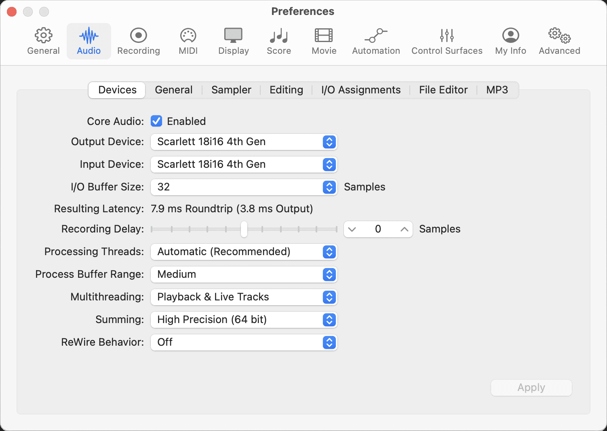
Logic Pro X 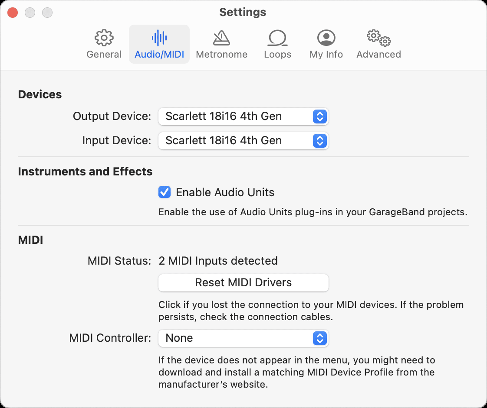
GarageBand - Click Apply (Logic Pro only).
- Close the Preferences or Settings window.
- Logic Pro: Tick Input Monitoring and Record Enable. GarageBand: Tick I want to hear my instrument as I play and record. This allows you to hear sound coming in from your Scarlett's input.
-
Click Create.
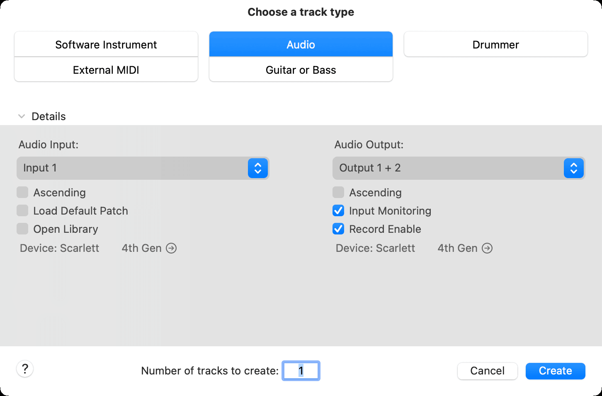
Logic Pro 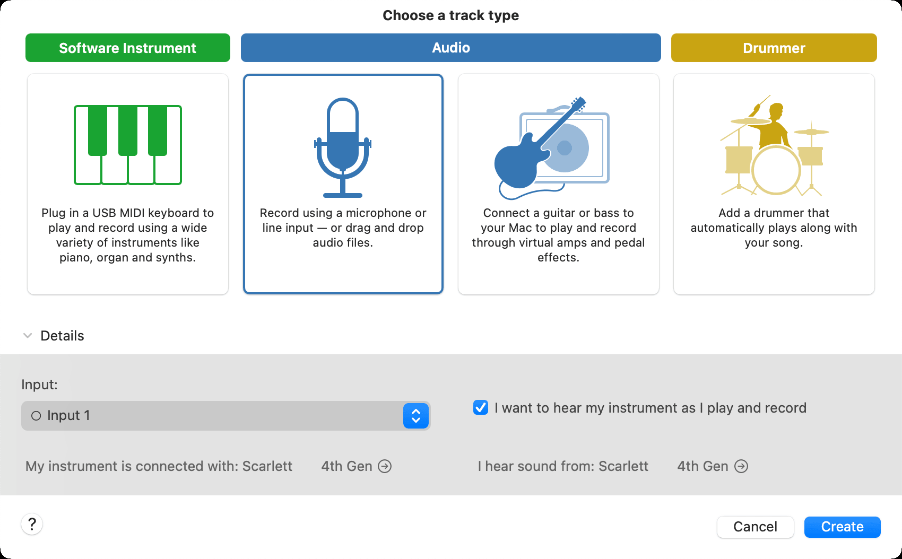
GarageBand - When you're ready to record, click the record button at the top of Logic/GarageBand.
Ableton Live
To get set up in Ableton Live, follow these steps:
Windows
- Open Ableton Live on your computer.
- Click Options > Preferences...
- Go to the Audio tab on the left-hand side of the Preferences window.
-
Set the Driver Type to ASIO, and Audio Device to Focusrite USB ASIO.
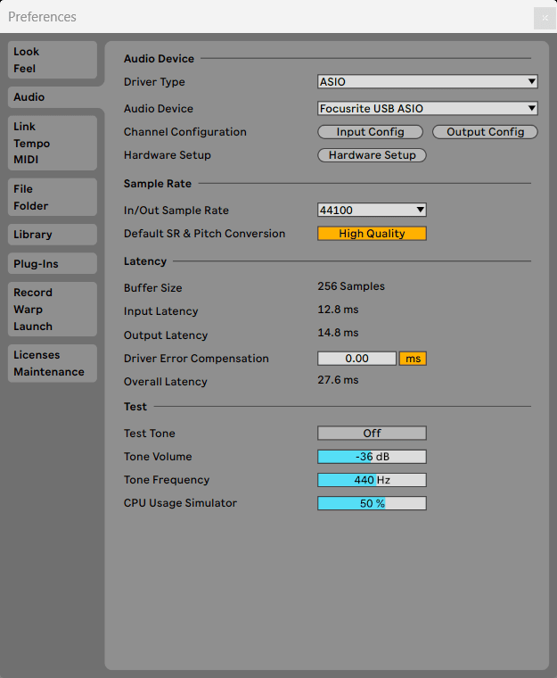
- Click Input Config. The next step is to make all the inputs on your device appear as input options in Ableton.
-
Click to highlight each set of Mono and Stereo Inputs to make sure they appear as selectable in Live.
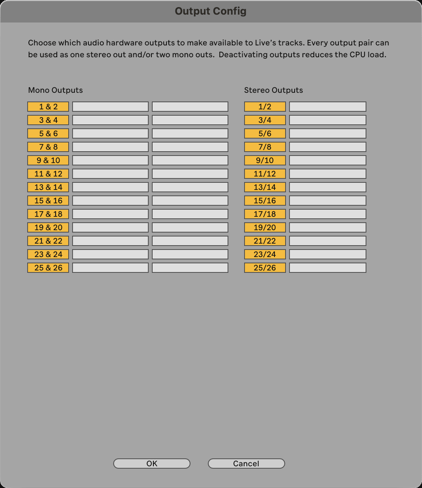
- Click OK.
- Do the same for the Output Config, if you are using multiple outputs from your Scarlett 18i16.
- Close the Preferences Window.
Mac
- Open Ableton Live on your computer.
- Click Live in the top menu bar.
- Click Settings.
-
Go to the Audio tab on the left-hand side of the Preferences window. Set the Audio Input Device and Audio Output Device to Scarlett 18i16 4th Gen.
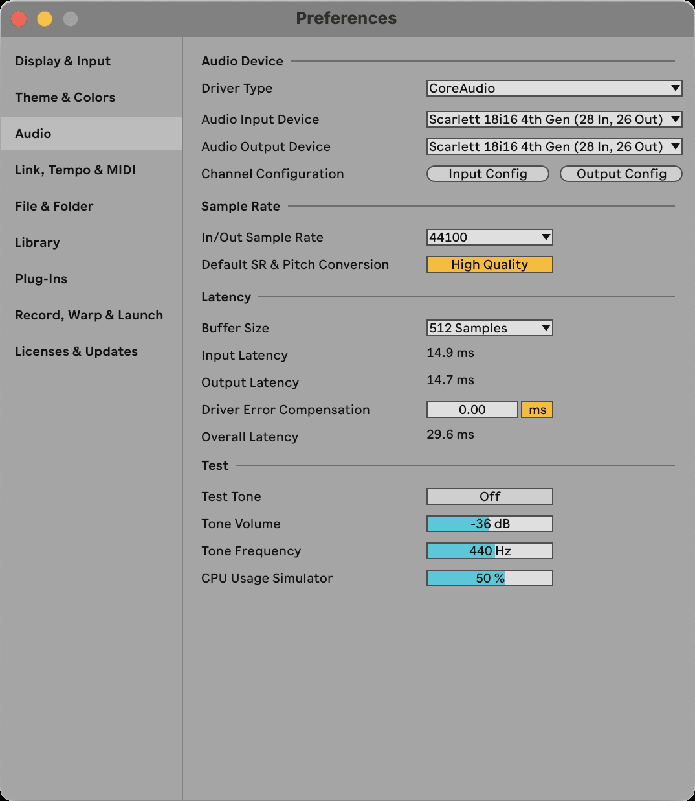
- Click Input Config. The next step is to make all the inputs on your device appear as input options in Ableton.
-
Click to highlight each set of Mono and Stereo Inputs to make sure they appear as selectable in Live. You will see up to 20 channels.

- Click OK.
- Do the same for the Output Config, if you are using multiple outputs from your Scarlett 18i16.
- Close the Preferences Window.
Getting sound into Ableton
- Click to highlight an Audio Track in Live's main window. Live has two views (Session and Arrangement), so depending on which view you are in, please see the following screenshot.
-
Set the Audio From to Ext. In and the input drop-down to the interface input you are using, e.g. 1.
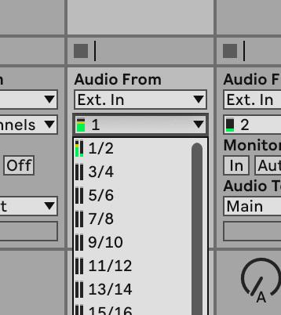
- Set the Monitor to Auto. This allows you to hear sound coming in from your Scarlett's input.
-
Click the record arm button beneath the track. It lights red when record arm is on. Send a signal to the input on your Scarlett and you should see the meter in Ableton move.
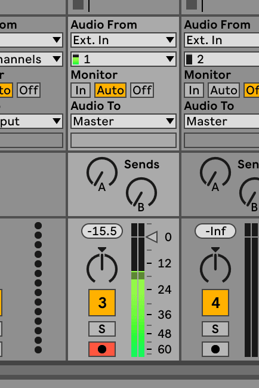
- When you're ready to record, click the record button in Ableton's transport bar.
Pro Tools
To get set up in Pro Tools, follow these steps:
Step-by-step instructions for Windows and macOS
- Open Pro Tools on your computer.
-
Click Setup > Playback Engine in the top menu bar.
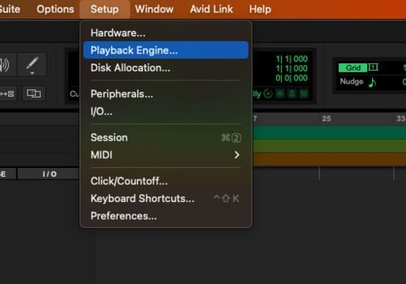
-
Select Focusrite USB ASIO (Windows) or Scarlett 18i16 4th Gen (Mac) in the Playback Engine dropdown.
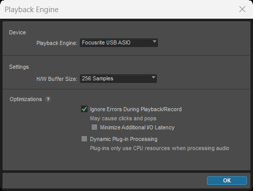
Windows 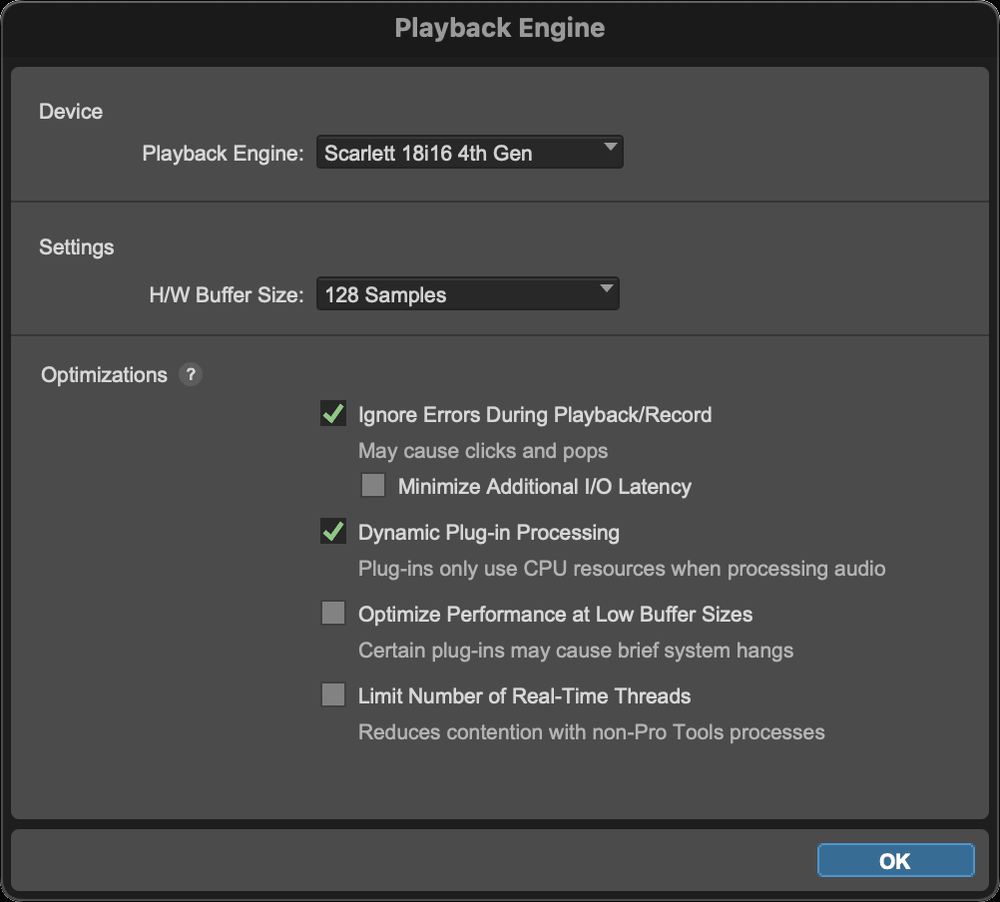
Mac - Click Track > New in the top menu bar.
-
Set the number of tracks you need and set the type to Audio Track.
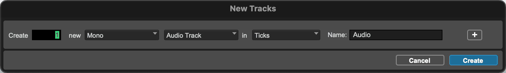
- Click Create.
- Click the record arm and input enable buttons on the track. This allows you to hear sound coming in from your Scarlett's input.
- Click the main Record Enable button at the top of the Pro Tools window, it turns red when enabled.
- Click the Play button to begin recording.
Reaper
To get set up in Reaper, follow these steps:
Windows
- Open Reaper on your computer.
-
If you see a pop-up window, asking you to select your audio device driver, click Yes.
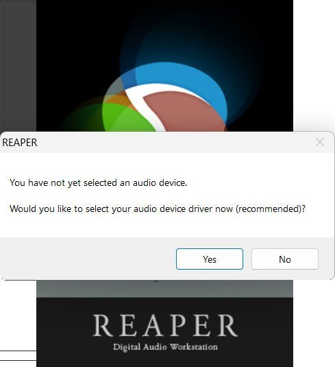
If you don't see the pop-up, go to Options (top menu) > Preferences > Device.
-
In the Audio device settings:
- Select ASIO in the Audio system: dropdown.
- Select Focusrite USB ASIO in the ASIO Driver: dropdown.
- Set the first and last input and output range to match the number of inputs you want to use.
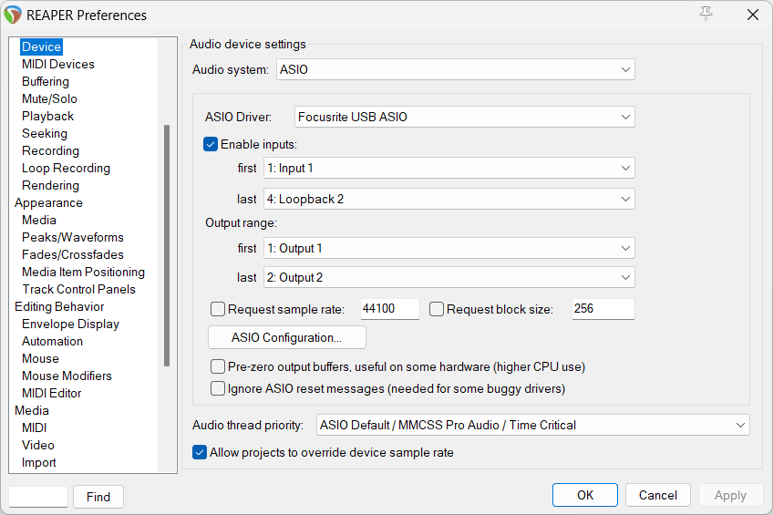
- Click OK.
- Click Track (top menu) > Insert New Track.
- Click the red record-armed button.
-
Click the Input 1 box to select your input on your Scarlett 18i16.
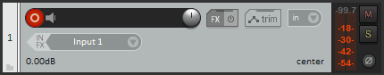
- When you're ready to record, click the record button in the bottom section of Reaper.
Mac
- Open Reaper on your computer.
-
If you see a pop-up window, asking you to select your audio device driver, click Yes.
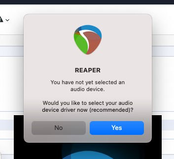
If you don't see the pop-up, go to Options (top menu) > Settings > Device.
-
Choose Scarlett 18i16 in the Audio Device dropdown menu.
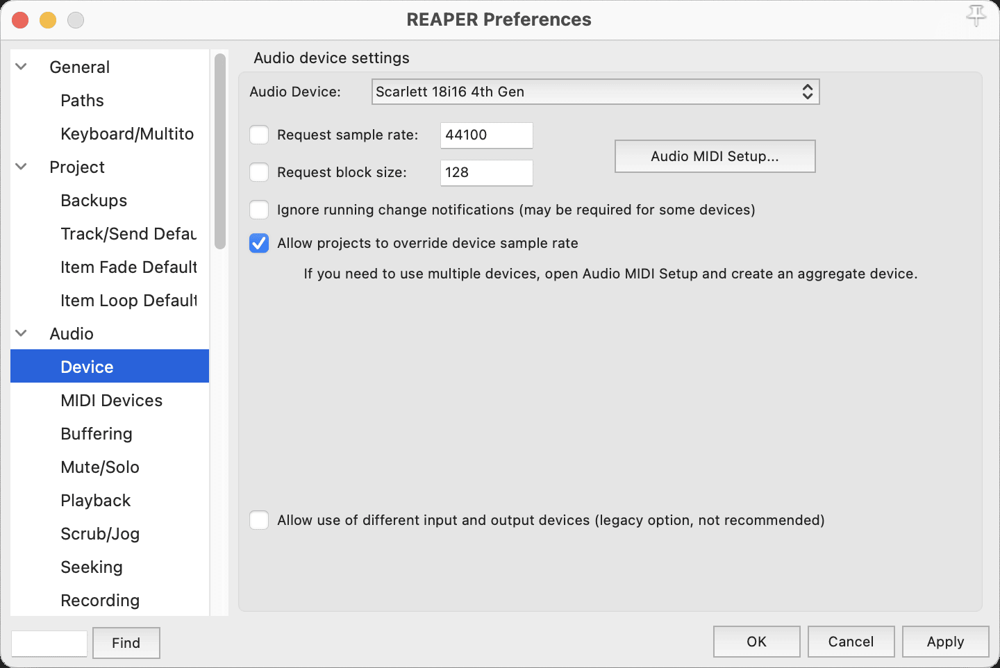
- Click OK.
- Click Track (top menu) > Insert New Track.
- Click the red record-armed button.
-
Click the Input 1 box to select your input on your Scarlett 18i16.
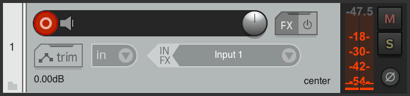
- When you're ready to record, click the record button in the bottom section of Reaper.
FL Studio
To get set up in FL Studio, follow these steps:
Step-by-step instructions for Windows and macOS
- Open FL Studio on your computer.
- Go to Options > Audio Settings.
-
Set the Device to Scarlett 18i16 4th Gen (or Focusrite USB ASIO on Windows) in the Input / output section.
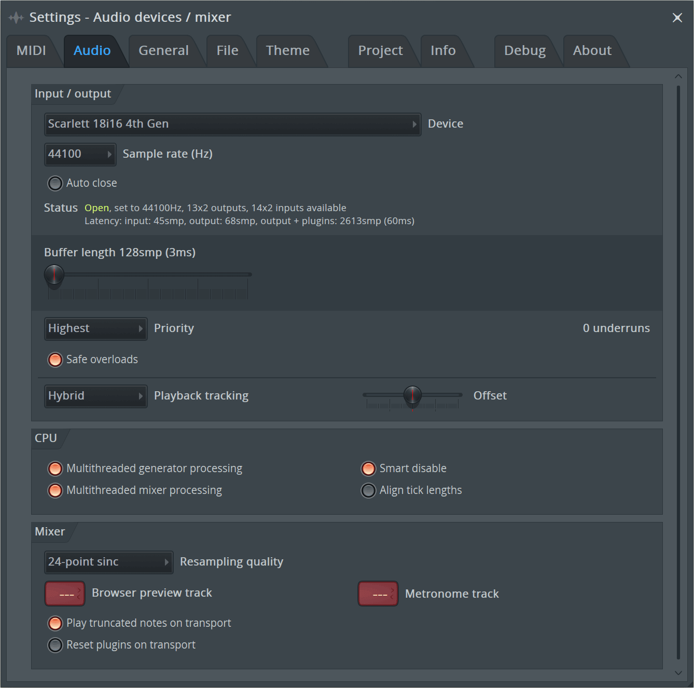
- Close the Settings window.
- In the Mixer, click on the insert you want to record in to.
-
Set the external input drop-down from (none) to the interface input you are using, e.g. Input 1 for input mono, or Input 1 - Input 2 for both inputs 1 and 2 in stereo.
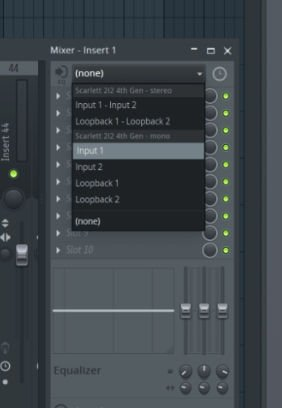
-
Click the main record button in the transport section.
Choose an option in the What would you like to record? window. If you're not sure which option to choose, please see FL Studio's help files.
- When you're ready to record, press the play button in the transport section.
Cubase
Windows
- Open Cubase on your computer.
-
In the top menu bar, click Studio > Studio Setup…
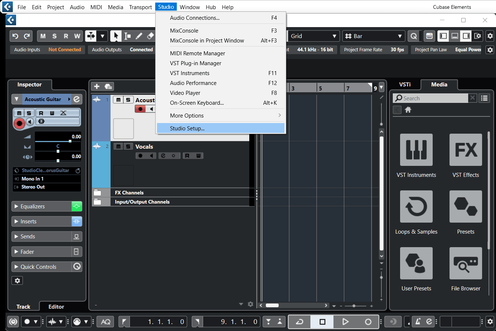
- Click Audio System on the left-hand side.
-
Set the ASIO Driver to Focusrite USB ASIO.
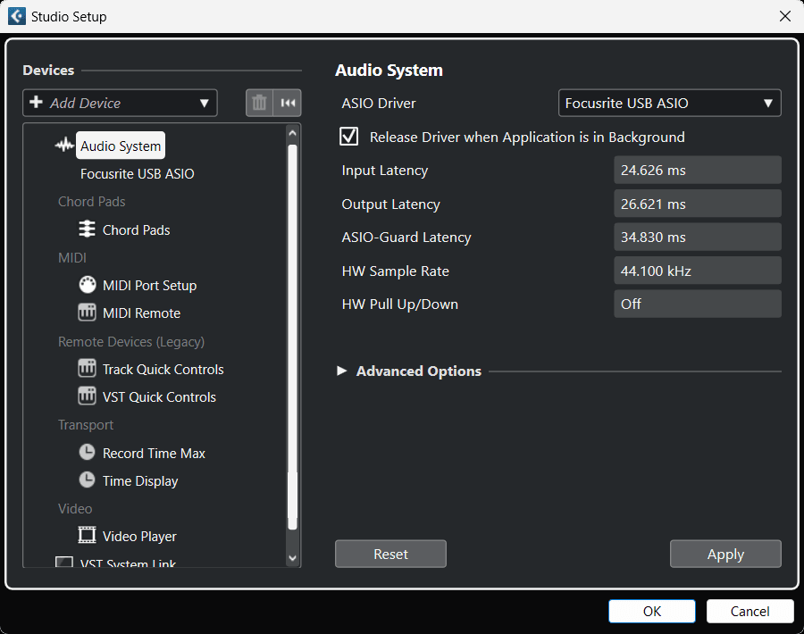
- Click OK.
- Right-click in the MixConsole.
- Click Add Audio Track.
-
Configure the track type as Audio and set the Audio Input to the channel you're using on your interface.
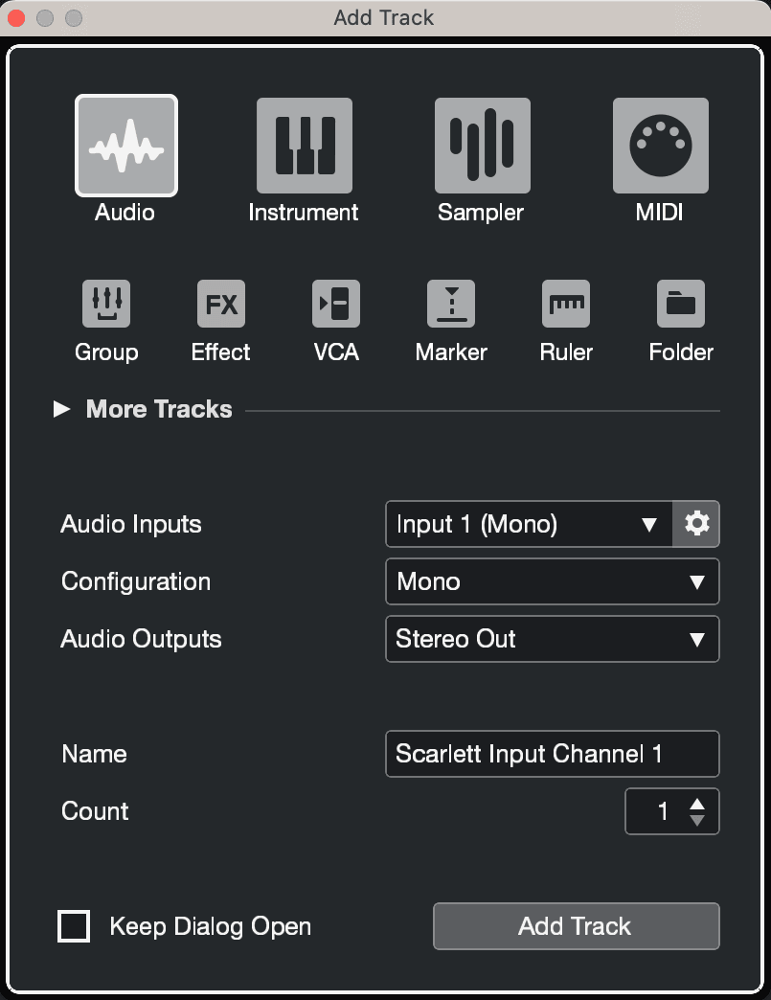
- Click Add Track.
- Click the Record Enable and Monitor buttons (off) on the Cubase channel to enable the track for recording and so you can hear it using input monitoring (on).
- Click Transport Record in Cubase's transport to start recording.
Mac
- Open Cubase on your computer.
-
In the top menu bar, click Studio > Studio Setup…
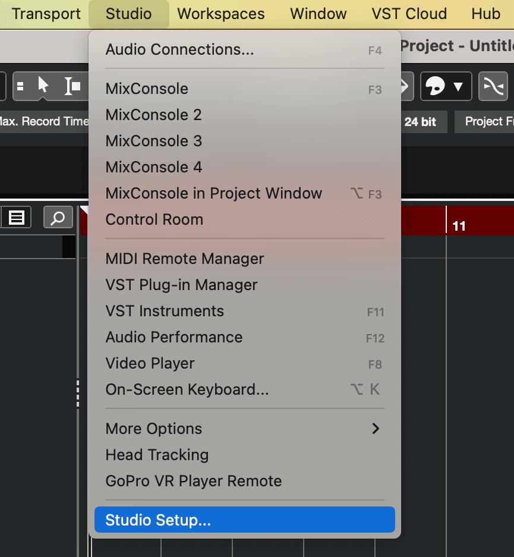
- Change the ASIO Driver to Scarlett 18i16 4th Gen.
- Click Switch.
- Click OK.
- Right-click in the MixConsole.
- Click Add Track.
-
Configure the track type as Audio and set the Audio Input to the channel you're using on your interface.

- Click Add Track.
- Click the Record Enable and Monitor buttons (off) on the Cubase channel to enable the track for recording and so you can hear it using input monitoring (on).
- Click Transport Record in Cubase's transport to start recording.
Using your Scarlett 18i16
This section covers some common use cases for the Scarlett 18i16. Often your use case is a variant of these and how you use your Scarlett 18i16 probably reuses some principles.
Recording a hardware electronic music setup
Using your Scarlett 18i16's line inputs, you can make it the central hub for recording in an electronic music setup. Most electronic music gear—synthesisers, drum machines, groove boxes, mixers, and effects—use line outputs, so with 6.35mm (1/4”) TRS jack cables, you can record and perform with your entire setup simultaneously.
The following diagram shows an electronic music set up with some mono and stereo synths, and a drum machine. Your setup might look a little different, but the principles are the same.
- A stereo synth connected using two 6.35mm (1/4") TRS jack cables.
- A stereo drum machine connected using two 6.35mm (1/4") TRS jack cables.
- A mono synth connected using two 6.35mm (1/4") TRS jack cables.
- A second mono synth, connected using two 6.35mm (1/4") TRS jack cables.
- Headphones for you to monitor your performance.
- A second set of headphones if you need them, or you could use this second headphone output for recording, see the Tip below.
Your Scarlett 18i16 can work in standalone. For a completely DAW-less setup you can disconnect your computer and use the line outputs, or spare headphones output, to send a stereo output to a portable recorder, or mixing console for live performance. See Standalone Mode.
Recording a drum kit
In this section, we'll cover how you might use the four mic preamps on your Scarlett 18i16 to mic up a drum kit. We'll also go into a bit of detail in how to make the most of the inputs you have.
This diagram shows which drums you might want to record to each of your Scarlett 18i16's inputs:
- Kick
- Snare
- Overhead Left
- Overhead Right
- Engineer's headphones
- Drummer's headphones.
Make sure your first Overhead mic is in an odd-numbered channel so you can link the channels. This makes sure the settings for both overheads are identical.
When you're recording a drum kit, there are many ways to place your overhead microphones that suit different styles of music.
In most modern recording we'd use a stereo mic setup, but for a more vintage/retro/compact sound, you can use a single mono overhead microphone.
If you'd like to find out more, we recommend looking up the following drum overhead mic techniques:
- Spaced pair (A/B).
- XY pair.
- Near coincident pair.
- The Glyn Johns method.
Recording an acoustic session
In this section, we're covering how you might record an acoustic session, a stripped-back performance or live session with acoustic instruments.
This diagram shows the sort of instruments you might want to record in this type of recording scenario and how you can make use of the inputs on your Scarlett 18i16.
- Stereo mic setup - when you're recording a more intimate session to create a sense of space, you might want to begin with a stereo microphone setup, for example:
- Stereo microphones on a singer-songwriter's guitar.
- Stereo microphones on a piano.
- Stereo microphones in front of the whole band.
- Individual instrument microphone - You could use this to mic up a single instrument, voice, or amplifier.
- Vocal microphones - a microphone for your main vocalist.
- Line inputs - Use the line inputs for any other instruments that aren't strictly acoustic, such as a 'line output' of a bass amp, or line outputs of an electric keyboard.
- Engineer's headphones - Use these headphones to monitor what you're recording.
- Artist headphones - often if the band is performing live, you won't need to give them headphones. However, if anyone wants to play to a backing track, metronome, or needs monitoring, you could use the second headphone output for the artist.
Standalone Mode
The Scarlett 18i16 has a standalone mode; this mode allows your interface to pass audio when it's not connected to a computer. This can be useful for:
- Increasing the number of preamps on another interface or mixer that has run out of microphone preamps, for example:
- Using any spare line inputs on the other interface. For example, by routing the Scarlett's microphone inputs to its line outputs.
- To use your studio setup without having your computer turned on or plugged in, for example, to use your guitar through your speakers, or any electronic music equipment connected.
To setup Standalone mode:
- Connect your Scarlett's power socket to mains power.
- Connect your Scarlett 18i16 to a computer running Focusrite Control 2. In Focusrite Control 2's mixer page route the Scarlett 18i16's inputs to the outputs you'd like to use. See Using the Focusrite Control 2 Mixer tab.
- Disconnect your Scarlett 18i16 from your computer and it continues to pass audio in standalone mode.
- Connect your inputs and outputs to your interface as usual.
Using your Scarlett 18i16's Loopback feature
The loopback feature on your Scarlett 18i16 allows you to send the sound produced by your computer and route it back into your Scarlett for recording or streaming, without using physical cables. This can be particularly useful in various scenarios, such as sampling, podcasting, live-streaming, or recording screen tutorials:
- Sampling: You can record sounds back into your software to use as samples in your music.
- Podcasting: You can use loopback to record online interviews or discussions, where you want to capture both your voice and the voices of remote participants.
- Live Streaming: It's useful for streaming content with accompanying audio from your computer, such as gameplay, presentations, or tutorials.
- Screen Recording: When creating video tutorials or screencasts, loopback allows you to include the sound produced by your computer along with your narration.
To use Loopback, with your Scarlett:
- Open your DAW or recording software.
- Create a new recording channel in your DAW and either mute, or set the output to 'none' for this channel. It's important to do this so you don't cause a feedback loop.
- Set your recording input of the muted channel to the Loopback channels of your Scarlett 18i16, channels 9-10.
- Start recording.
The channels in your recording software receive the output of your Scarlett. You can use other channels in your recording software to record anything connected to the inputs on your Scarlett alongside the Loopback feed.
When you're using Loopback, mute the channels in your recording software so you don't cause a feedback loop.
Using Focusrite Control 2 with your Scarlett 18i16
Focusrite Control 2 is the software you need to use to manage your Scarlett interface. Focusrite Control 2 manages your routing, monitoring, mixer settings, and firmware updates.
Using the Focusrite Control 2 Mixer tab
Your Scarlett 18i16 contains a mixer controllable from the Mixer page in Focusrite Control 2. You can use this mixer to combine and send input sources to the physical outputs of your Scarlett 18i16 using the Routing tab.
The input sources to the mixer include:
- Physical Inputs
- Analogue inputs (Instrument, microphone, or line inputs)
- Playback Inputs
- Output Channels from your DAW software
- Software playback from other computer software.
Once you've created a mix of inputs, you can send this to the physical outputs of your Scarlett 18i16 to create a custom mix for your speakers, or for an artist's headphone mix.
Mixes
At the top of Focusrite Control 2's Mixer you can see the different Mixes you have available listed as Mix A, Mix B, etc.
Each Mix allows you to combine inputs and send the mixes to outputs for different needs. For example, you may wish to use Mix A to listen to audio through speakers and use Mix B for a singer's headphone mix. The singer may want to hear more of their own vocals in their headphones, so you can increase the volume for Mix B only.
You can only feed each Output from one Mix. For example, you can't send Mix A and Mix B simultaneously to your headphones. When you're choosing Mix destinations, Focusrite Control 2 shows you if an output already has a feed from a different Mix. If you route the current Mix to an Output with a Mix already routed to it, it overwrites the routing to that Output.
You can have multiple Mixes active at once in Focusrite Control 2.
Each Mix works independently, so, for example, you can route Mix A to your monitors and Mix B to headphones, without affecting each other. Note, a single Output can only receive one Mix at a time—if you assign a new Mix to an Output already in use, it will overwrite the previous routing.
Click on a Mix to select it. You can now route it to any Output(s) of your choice. To do this:
- Click any existing Output, or the pencil icon right of Routed to →
- Tick the destinations you want to send this Mix to.
For example, you could send Mix A to Outputs 1-2, where you may have connected your monitors, and Headphones. You could then hear the same mix in your headphones and monitors.
- Click to close the Mix destinations pop-up.
Above the mixer channels, you can see which Outputs your Mix is routed to. If you've not routed a Mix to an output, you'll see No outputs assigned.
You can also change which outputs your mixes are going to in Focusrite Control 2's Routing tab, see Using the Focusrite Control 2 Routing tab for more information.
Loopback Destination
If you would like to record the specific mix of inputs you have made, select Loopback as a Mix destination. See Loopback.
Using the Mixer Channels
Each mixer channel has several functions.
- Mix Channel Name
This shows the name of the mixer input.
- Pan
Moves a mono channel's position in the stereo image from left to right, or changes a stereo channel's balance from left to right. The default is centre. Alt, option ⌥ click, or double-click, to reset.
- Fader
The Fader adjusts the level going to your Mix destination. Alt, option ⌥ or double-click to reset.
The faders have no effect on the sources you are currently recording.
- Meter
This shows you the channel's level, in dBFS. Green shows a good level, and amber means the level is very high.
You'll see two meters for stereo channels, one for each left and right side.
The meter shows the level post-fader, the fader setting will affect the meter.
- Mute and Solo
Mute - Click the Mute button to silence the channel in the Mix. The Mute button lights blue when enabled. You can Mute multiple channels simultaneously.
Solo - Click the Solo button to solo the track by silencing all other channels in the Mix. The Solo button lights yellow when enabled. Enabling Solo on multiple channels silences any channels without Solo enabled, i.e. you will hear all the Solo'd channels.
If you enable both Mute and Solo, the last clicked option takes priority.
Using the Focusrite Control 2 Routing tab
The routing tab in Focusrite Control 2 lets you organise what inputs and mixes you're sending to the outputs of your Scarlett.
When you open the Routing tab, you'll see a list of Sources and Outputs:
- The Output list refers to each of the outputs on your Scarlett and is divided into Analogue outputs (line outputs, headphones) and the digital outputs (Loopback).
- The Source list is editable and lets you choose a source of audio to send to the corresponding output. Sources can either be inputs, DAW (software) playback channels or a combination of the two you've created as a mix in Focusrite Control 2's Using the Focusrite Control 2 Mixer tab.
To assign a source to an output, find the output you'd like to use in the Output list and click the corresponding Source dropdown menu. Click a Source in the list to start sending that audio to the output. The meters to the right of the row show what you're sending to the output.
You can only feed each Output from one Mix. For example, you can't send Mix A and Mix B simultaneously to your headphones. When you're choosing Mix destinations, Focusrite Control 2 shows you if an output already has a feed from a different Mix. If you route the current Mix to an Output with a Mix already routed to it, it overwrites the routing to that Output.
Making Outputs mono in Focusrite Control 2
In the Routing tab, you can split stereo outputs to make two mono outputs, so you can send them completely independent Sources. You might want to use this if you're sending mono channels to outboard equipment, or if you have a mono speaker for testing your mixes.
To make an output pair two mono channels, click on the stereo symbol in the box to the left of the stereo pair.
The single stereo output expands to two mono outputs, and each output has its own independent Source dropdown box.
To revert to a stereo pair, click the mono symbol in the box to the left.
Loopback
If you would like to record the specific mix of inputs you have made, select Loopback as a Mix destination. See Using your Scarlett 18i16.
Using Presets in Focusrite Control 2
Presets give you a way to quickly restore settings for your Scarlett. You can change the settings to suit a particular session or set up and save this as a nameable preset. Next time you need to recall those settings, you can Load the preset.
Presets contain the following settings:
- Input settings per channel:
- +48V
- Inst
- Air mode
Focusrite Control 2 saves presets to the computer you're using when you save it. However, your Scarlett keeps its settings for use with a different computer or in standalone mode.
Saving a Preset
The first step of using Presets in Focusrite Control 2 is changing some settings. Once you've set up Focusrite Control 2 with some settings you want to recall in future, you can save a preset. There are two ways to save a preset: saving a New Preset or Overwrite an existing preset.
Saving a New Preset
- Tweak the settings for your Scarlett in Focusrite Control 2.
- Click the Presets button in the bottom left of Focusrite Control 2.
- Click the New Preset button.
- Type the name of your preset in the Preset Name field. Make sure the name is useful so you can find and reuse it later.
- Click Save Preset.
Once you've saved the preset, the name of the preset shows in the bottom left corner of Focusrite Control 2. If you change any setting while you're in that preset, the name shows an asterisk *.
When the name shows an asterisk * you can either create a new preset using the steps above, or you can overwrite the preset with the new changes.
Overwriting a Preset
- Tweak the settings of an existing preset so an asterisk * appears next to the Preset name.
- Click the Presets button in the bottom left of Focusrite Control 2.
- Hover your mouse over an existing preset and click on the three dots to the right of the name.
- Click Overwrite.
- Before committing to overwriting a Preset, read the warning pop-up and click the Overwrite button to confirm overwriting the existing preset.
Overwriting a preset replaces the stored preset's settings with your current settings. You can't undo this change.
Loading a Preset
Loading a preset recalls a set of settings you've saved previously.
- Click the Presets button in the bottom left of Focusrite Control 2.
- Click the preset you want to load.
- Click the Load button.
Renaming a Preset
Renaming allows you to change the name of a preset without changing any of its settings.
- Click the Presets button in the bottom left of Focusrite Control 2.
- Hover your mouse over an existing preset and click on the three dots to the right of the name.
- Click Rename.
- Type the new name for the Preset in the Preset Name field.
- Click Rename Preset.
Deleting a Preset
Deleting a Preset removes the preset from Focusrite Control 2. You cannot get it back and you can't undo this action. Deleting a Preset won't change your interface's settings.
- Click the Presets button in the bottom left of Focusrite Control 2.
- Hover your mouse over an existing preset and click on the three dots to the right of the name.
- Click Delete.
- Before committing to deleting a Preset, read the warning pop-up and click the Delete button to confirm deleting the preset.
Focusrite Control 2 Preferences
Click the ellipsis in Focusrite Control 2's top right corner and click Preferences to open the Preferences page.
In the Preferences page, you have the tabs:
- Sample rate
- Device
- Application
- Remote Devices
Sample rate & clocking tab
Sample Rate (kHz)
Sample rate refers to the samples per second your computer is recording. The higher the value, the higher the quality; however, the higher the value, the more hard drive space your recordings take up.
Some features, listed below, are not available at quad-band sample rates (176.4 and 192kHz).
- Air Presence & Drive (Air Presence still works)
- Clip Safe
- Mix Sources
- Coaxial S/PDIF
- Optical S/PDIF
- ADAT Channels
Device tab
Device reset
To do a device reset:
- Click Reset to default settings.
- Read the "Are you sure?" pop-up to make sure you want to Reset your Scarlett.
- Click Reset.
When you do a device reset, your presets are not deleted. So after you've factory reset your device, you reload any previous settings you've saved as a Preset.
Application tab
Share usage data with Focusrite
Use this tick box to opt into usage analytics to help us make Focusrite Control 2 better. Please see our Privacy Policy for more information.
Remote Devices - Installing the Focusrite Control 2 mobile app
To accompany Focusrite Control 2 we've created the Focusrite Control 2 mobile app.
The mobile app lets you connect mobile devices on the same Wi-Fi network as your computer to control and view Focusrite Control 2.
The remote devices tab lets you manage any phones or tablets you've previously connected to Focusrite Control 2.
The Focusrite Control 2 mobile app runs on Android and iOS, and you can download it from the Google Play Store or Apple App Store by clicking on this link or scanning the QR code on your mobile device:
fc2.focusrite.com/mobile/download
The Focusrite Control 2 mobile app can only control the Focusrite Control 2 when it's running on your computer.
It's not possible to use the mobile app to control your Scarlett directly.
Updating Focusrite Control 2 and your Scarlett 18i16
Updating Focusrite Control 2
We update Focusrite Control 2 occasionally with new features and improvements to make sure you are getting the most from your Scarlett 18i16.
There are two ways to make sure you have the latest Focusrite Control 2 version:
- Use the updater in Focusrite Control 2:
- Open Focusrite Control 2.
- There are two options in Focusrite Control 2.
- If an update is available, a dialogue window automatically appears. Click Install Update to start the update.
Windows macOS - To check you are using the latest version, click the ellipses in Focusrite Control 2's top right corner and click Check for updates.
- If an update is available, a dialogue window automatically appears. Click Install Update to start the update.
- Click Install Update (Windows) or Install and Relaunch (macOS) in the prompt that appears after you've downloaded the update.
On macOS Focusrite Control 2 restarts, and it's now up-to-date. For Windows, please see the next steps.
- Click Yes when asked, “Do you want to allow this app to make changes to your device?”.
- Follow the instructions in the Focusrite Control 2 Installation window.
- Click Finish at the end of the installation. Focusrite Control 2 reopens, and it is now up-to-date.
- Install Focusrite Control 2 from our Downloads page:
- Go to the Focusrite downloads website: focusrite.com/downloads
- Find your Scarlett on the Downloads website.
- Download Focusrite Control 2 for your operating system (Windows or Mac).
- Open the Downloads folder on your computer and double-click the Focusrite Control 2 installer.
- Follow the on-screen instructions to install Focusrite Control 2.
- If it's not already, connect your Scarlett interface to your computer with the USB cable.
- Open Focusrite Control 2 and it detects your Scarlett automatically.
Updating your Scarlett 18i16
We occasionally update your Scarlett 18i16's firmware with new features and improvements, to make sure you are getting the most from your Scarlett. Focusrite Control 2 updates your Scarlett 18i16's firmware.
To update your Scarlett:
- Open Focusrite Control 2.
If there is an update available, Focusrite Control 2 tells you when you open it.
- Click Update Scarlett 18i16.
Focusrite Control 2 starts the update, do not disconnect your Scarlett 18i16 while the update is in progress.
- Click Continue after the update has finished.
Your Scarlett 18i16 is now up-to-date, and you can continue to use it as normal.
Scarlett 18i16 Specifications
These specifications allow you to compare your Scarlett 18i16 with other devices and make sure they'll work together. If you're not familiar with these specifications, don't worry you don't need to know this information to use your Scarlett 18i16 with most devices.
Scarlett 18i16 Performance Specifications
Where possible, we measure all performance figures following AES17.
| Supported Sample Rates | 44.1 kHz, 48 kHz, 88.2 kHz, 96 kHz, 176.4 kHz, 192 kHz |
| Bit Depth | 24-bit |
| Microphone Inputs | |
| Frequency Response | 20Hz - 20kHz ± 0.06dB |
| Dynamic Range (A-weighted) | 116dB |
| THD+N | -100dB @ 8dB gain |
| Noise EIN (A-Weighted) | -127dBu |
| Maximum Input Level (at minimum gain) | 16dBu |
| Gain Range | 69dB |
| Input Impedance | 3kΩ |
| Variable-level Line Inputs (1 - 4) | |
| Frequency Response | 20Hz - 20kHz ± 0.05dB |
| Dynamic Range (A-weighted) | 115.5dB |
| THD+N | -100dB @ 8dB gain |
| Maximum Input Level (at minimum gain) | 22dBu |
| Gain Range | 69dB |
| Input Impedance | 24kΩ |
| Fixed-level Line Inputs (5 - 8) | |
| Frequency Response | 20Hz - 20kHz ± 0.02dB |
| Dynamic Range (A-weighted) | 115.5dB |
| THD+N | -106dB |
| Maximum Input Level (at minimum gain) | 22dBu |
| Input Impedance | 48kΩ |
| Instrument Inputs | |
| Frequency Response | 20Hz - 20kHz ± 0.05dB |
| Dynamic Range (A-weighted) | 113dB |
| THD+N | -80dB @ minimum gain |
| Maximum Input Level (at minimum gain) | 12dBu |
| Gain Range | 62dB |
| Input Impedance | 1MΩ |
| Line Outputs (balanced) | |
| Frequency Response | 20Hz - 20kHz ± 0.02dB |
| Dynamic Range (A-weighted) | 122dB |
| THD+N | -112dB |
| Maximum Output Level | 16dBu |
| Output impedance | 200Ω |
| Headphone Outputs | |
| Frequency Response | 20Hz - 20kHz ± 0.1dB @ 33Ω / 300Ω |
| Dynamic Range (A-weighted) | 112dB @ 33Ω 116dB @ 300Ω |
| THD+N | -100dB @ 33Ω (Minimum) -110dB @ 300Ω (Minimum) |
| Maximum Output Level | 5dBu into 33Ω 11dBu into 300Ω |
| Maximum Output Power | 57mW into 33Ω 27mW into 300Ω |
| Output impedance | 11Ω |
Scarlett 18i16 Physical and Electrical Characteristics
| Analogue Inputs | |
| Connectors | Four front-panel Neutrik® Combo XLR/6.35mm (1/4") TRS jack inputs Four back panel 6.35mm (1/4") TRS jack inputs |
| Mic/Line switching | Automatic |
| Phantom Power (48v) | Front panel 48V (phantom power) button or switch in software |
| Line/Instrument switching | Front panel Inst button or switch in software |
| Auto Gain | Front panel Auto button or switch in software |
| Clip Safe | Front panel Safe button. |
| AIR function | Front panel Air button or switch in software |
| Analogue Outputs | |
| Balanced Outputs | Four 6.35mm (1/4") balanced jack speaker outputs (two Main, two Alt) |
| Headphone Output | Front panel stereo 6.35mm (1/4") TRS jack socket |
| Main Output Level Control | Digitally controlled encoder |
| Headphones Level Control | Front panel analogue control |
| Other I/O | |
| USB | 5V DC Type-C USB port |
| Front Panel Indicators | |
| Channel Selection | White/Green LEDs for channels 1 and 2 |
| Select button | White/Green Select LED |
| 48V | White/Green 48V LED (depending on the selected channel) |
| Inst | White/Green Inst LED (depending on the selected channel) |
| Auto | White Auto LED to initiate Auto Gain |
| Clip Safe | White/Green Safe LED (depending on the selected channel) |
| Air Mode | White, green, amber Air LED (depending on the selected channel and selected Air mode) |
| Output Level Meter | Three-colour LED ring around Output control. |
| USB | USB LED |
| Weight and Dimensions | |
| Weight | 1.5kg (lbs) |
| Height | 60.5 (2.38") |
| Width | 240mm (9.45") |
| Depth | 169mm (6.67") |
| Environmental | |
| Operating Temperature | 40°C / 104°F Maximum ambient operating temperature |
Scarlett 18i16 Input Channel Order
Single-band - 44.1kHz and 48kHz
| DAW Input | Input | |
|---|---|---|
| Optical port mode: ADAT | Optical port mode: S/PDIF | |
| 1 | Mic/Line/Inst 1 | Mic/Line/Inst 1 |
| 2 | Mic/Line/Inst 2 | Mic/Line/Inst 2 |
| 3 | Mic/Line 3 | Mic/Line 3 |
| 4 | Mic/Line 4 | Mic/Line 4 |
| 5 | Line 5 | Line 5 |
| 6 | Line 6 | Line 6 |
| 7 | Line 7 | Line 7 |
| 8 | Line 8 | Line 8 |
| 9 | Loopback 1 | Loopback 1 |
| 10 | Loopback 2 | Loopback 2 |
| 11 | S/PDIF L Via the coaxial port | S/PDIF L Via the Optical port |
| 12 | S/PDIF R Via the coaxial port | S/PDIF R Via the Optical port |
| 13 | ADAT 1 | |
| 14 | ADAT 2 | |
| 15 | ADAT 3 | |
| 16 | ADAT 4 | |
| 17 | ADAT 5 | |
| 18 | ADAT 6 | |
| 19 | ADAT 7 | |
| 20 | ADAT 8 | |
Dual-band - 88.2kHz and 96kHz
| DAW Input | Hardware Input | |
|---|---|---|
| Optical port mode: ADAT | Optical port mode: S/PDIF | |
| 1 | Mic/Line/Inst 1 | Mic/Line/Inst 1 |
| 2 | Mic/Line/Inst 2 | Mic/Line/Inst 2 |
| 3 | Mic/Line 3 | Mic/Line 3 |
| 4 | Mic/Line 4 | Mic/Line 4 |
| 5 | Line 5 | Line 5 |
| 6 | Line 6 | Line 6 |
| 7 | Line 7 | Line 7 |
| 8 | Line 8 | Line 8 |
| 9 | Loopback 1 | Loopback 1 |
| 10 | Loopback 2 | Loopback 2 |
| 11 | S/PDIF L Via the coaxial port | S/PDIF L Via the Optical port |
| 12 | S/PDIF R Via the coaxial port | S/PDIF R Via the Optical port |
| 13 | ADAT 1 | |
| 14 | ADAT 2 | |
| 15 | ADAT 3 | |
| 16 | ADAT 4 | |
Quad-band - 176.4kHz and 192kHz
| DAW Input | Hardware Input |
|---|---|
| 1 | Mic/Line/Inst 1 |
| 2 | Mic/Line/Inst 2 |
| 3 | Mic/Line 3 |
| 4 | Mic/Line 4 |
| 5 | Line 5 |
| 6 | Line 6 |
| 7 | Line 7 |
| 8 | Line 8 |
| 9 | Loopback 1 |
| 10 | Loopback 2 |
Notices
Troubleshooting
For all troubleshooting queries, please visit the Focusrite Help Centre at support.focusrite.com.
Copyright & Legal Notices
Focusrite is a registered trademark and Scarlett is a trademark of Focusrite Group PLC.
All other trademarks and trade names are the property of their respective owners.
2025 © Focusrite Audio Engineering Limited. All rights reserved.
Credits
Focusrite would like to thank the following Scarlett 4th Gen team members for their hard work in bringing you this product:
Aarron Beveridge, Adam Watson, Adrian Dyer, Adrien Fauconnet, Alex Middleton-Dalby, Alice Rizzo, Alistair Smith, Andy Normington, Andy Poole, Andy West, Arne Gödeke, Bailey Dayson, Bamber Haworth, Bash Ahmed, Ben Allim, Ben Bates, Ben Cochrane, Ben Dandy, Benjamin Dunn, Bran Searle, Callum Denton, Carey Chen, Cerys Williams, Chris Graves, Dan Clarke, Dan Stephens, Dan Weston, Daniel Hughley, Daniel Johnson, Danny Nugent, Dave Curtis, David Marston, Derek Orr, Ed Fry, Ed Reason, Eddie Judd, Ellen Dawes, Emma Davies, Flavia Ferreira, Greg Westall, Greg Zielinski, Guillem Allepuz, Hannah Williams, Harry Morley, Hasan Saeed, Ian Hadaway, Isaac Harding, Jack Cole, Jack Holyoak, Jake Wignall, James Hallowell, James Otter, Jason Cheung, Jed Fulwell, Jerome Noel, Jesse Mancia, Joe Crook, Joe Deller, Josh Wilkinson, Joe Munday, Joe Noel, Jon Jannaway, Julia Laeger, Kai Van Dongen, Keith Burton, Kiara Holm, Kieran Rigby, Krischa Tobias, Lars Henning, Laurence Clarke, Loz Jackson, Luke Piotrak, Luke Mason, Marc Smith, Mark Greenwood, Martin Dewhirst, Martin Haynes, Mary Browning, Massimo Bottaro, Matt Morton, Matt Richardson, Max Bailey, Michalis Fragkiadakis, Mick Gilbert, Mike Richardson, Nicholas Howlett, Nick Lyon, Nick Thomson, Oliver Tapley, Olly Stephenson, Paul Chana, Paul Shufflebotham, Pete Carss, Pierre Ruiz, Richard Carvalho, Richard Walters, Robert Blaauboer, Robert Mitsakov, Ross Chisholm, Sam Lewis, Samuel Price, Sandor Zsuga, Sebastian Heinz, Simon Burges, Stefan Archer, Stefan Elmes, Steve Bush, Stratis Sofianos, Taavi Bonny, Taren Gopinathan, Tom Carter, Tom Haines, Tony Pow, Valeria Cirillo, Will Hoult, Will Munn, Will Thomas, Vidur Dahiya, Wade Dawson, Zih-Syuan Yang.
Authored by Ed Fry.